Cost per IC can be given by
\begin {equation} \label {eqn:cost_ic} \mathrm {cost \hspace {1 mm} per \hspace {1 mm}IC} = \mathrm {variable\hspace {1 mm} cost \hspace {1 mm}per\hspace {1 mm} IC} + \bigg ( \frac {\mathrm {fixed \hspace {1 mm}cost}}{\mathrm {volume}} \bigg ) \end {equation}
Fixed cost dominates for small-volume products. Variable cost can be given by
\begin {equation} \label {eqn:variable_cost_ic} \mathrm {variable \hspace {1 mm} cost} = \frac {\mathrm {cost \hspace {1 mm} of \hspace {1 mm} die + cost \hspace {1 mm} of \hspace {1 mm} die \hspace {1 mm} test + cost \hspace {1 mm} of \hspace {1 mm} packaging}}{\mathrm {final \hspace {1 mm} test \hspace {1 mm} yield}} \end {equation}
The die cost depends on the number of good dies on a wafer and the percentage of those that are functional. The number of dies is simply the area of the wafer divided by the area of each die.
\begin {equation} \label {eqn:die_cost_ic} \mathrm {die \hspace {1 mm} cost} = \frac {\mathrm {cost \hspace {1 mm} of \hspace {1 mm} wafer }}{\mathrm {dies \hspace {1 mm} per \hspace {1 mm} wafer \times die \hspace {1 mm} yield}} \end {equation}
The cost of die increases with die area, roughly to the fourth power [11]. Die yield is given in defects/area (typically \(\mathrm {cm^2}\)) and is modeled as follows
\begin {equation} \label {eqn:die_yield_ic} \mathrm {die \hspace {1 mm} yield} = \bigg (1 + \frac {\mathrm {defects \hspace {1 mm} per \hspace {1 mm} unit \hspace {1 mm } area } \times \mathrm {die \hspace {1mm} area}}{\alpha } \bigg ) ^ {-\alpha } \end {equation}
\(\alpha = 3\) is a good estimate for today’s CMOS processes [11].
Most noise in a digital system is internally generated, and the noise value is proportional to the signal swing [11].
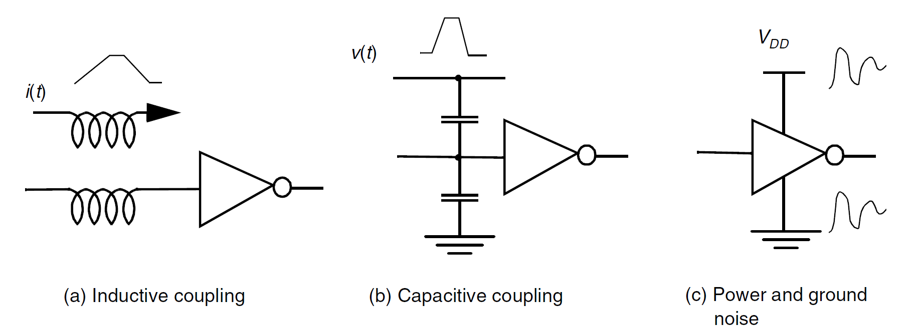
As shown in figure 1, the capacitive and inductive coupling arises from the parasitics within the system while the power and GND bounce comes externally and doesn’t depend on signal swing.
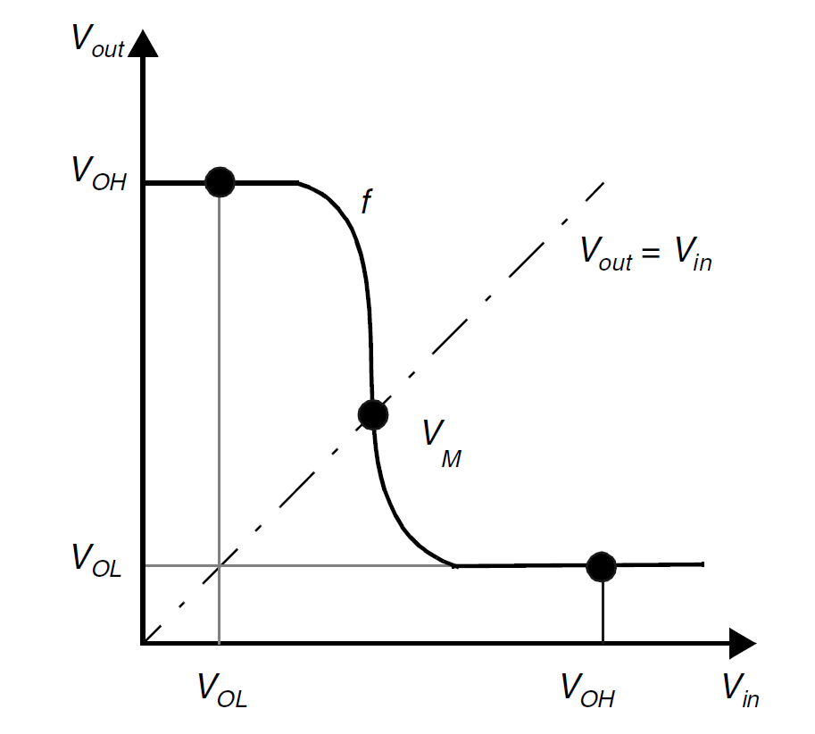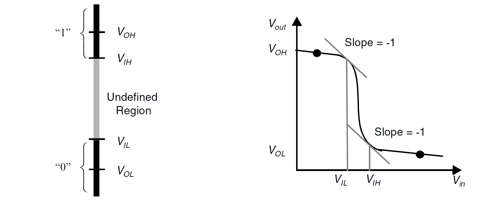
In figure 2, we see the output of an inverter for a range of input voltages. This is called the voltage transfer characteristic of the inverter. The switching threshold (\(V_M\)) is the point where the VTC curve intersects the line \(V_{out} = V_{in}\) or midrail. We define \(V_{OH}\) and \(V_{OL}\) as the nominal voltage values for logic levels 1 and 0. Accounting for noise, we often specify a range of values instead of a single point. We define \(V_{IH}\)/\( V_{IL}\) as the lowest/highest voltage value which can still represent the logic level 1/0. These points are obtained from the VTC where \(d V_{out} / d V_{in} = -1\) as shown on the right in figure 2.
A measure of sensitivity of a given logic gate to noise is given by noise margins. We can define
\begin {equation} NM_L = V_{IL} - V_{OL} \end {equation}
\begin {equation} NM_H = V_{OH} - V_{IH} \end {equation}
These values represent how much noise is tolerated at the input of the gate without flipping the bit. Noise margins should be greater than 0 when designing the system. The undefined region in figure 2 is also called the transtion region.
An ideal gate, therefore, has an infinite gain in the transition region (\(dV_{out} / dV_{in}\) is infinite), midrail switching threshold, noise margins equal to half the input swing, infinite input impedance and zero output impedance (infinite fanout).
Modern processors dynamically change voltage and clk frequency to extract the maximum performance at minimum energy consumption given the work load. They use a razor flip-flop as shown in figure 3 to detect if the clk is too fast or the supply too low. The idea is to sample the data twice and verify if the outputs agree with each other. If they don’t, we missed a setup or hold time somewhere on the data path. The data path is slower but a transparent latch in parallel is in a faster route. If the data arrives before the setup time on the data path, both the latch’s output and the register’s output settle to the same value leaving ERR low. If the data arrives later, the register will miss the data but the latch has an additional half cycle to capture it - and therefore, can assert ERR high. The data is then relauched by slowing down the clk or increasing the supply voltage.
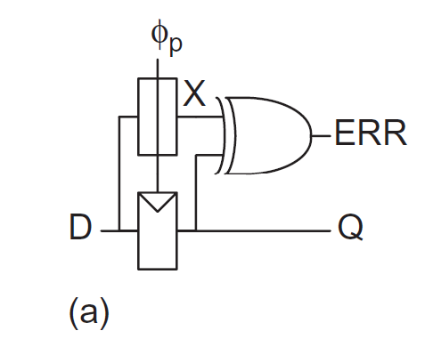
The fan-out denotes the number of load gates N that are connected to the output of the driving gate. Increasing fan-out can make the driving gate drive the output slower (dynamic perfomance is impacted). The fan-in of a gate is defined as the number of inputs to the gate. Gates with large fan-in tend to be more complex, which often results in inferior static and dynamic properties.
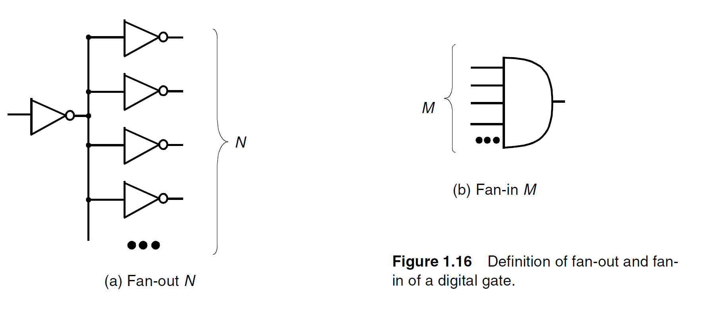
Performance in a digital system is expressed in terms of the clk frequency. This is set by a lot of factors, but primarily, is determined by the delays through the combinational and sequential elements. We define propagation delay as the time between when the voltage at the input is at 50% and when the output is at 50% as shown in figure 5. If the switching threshold is skewed (not at 50%), we then measure the time between these switching threshold values at the input and output. The propagation delay can be different for a high-to-low and low-to-high transition.
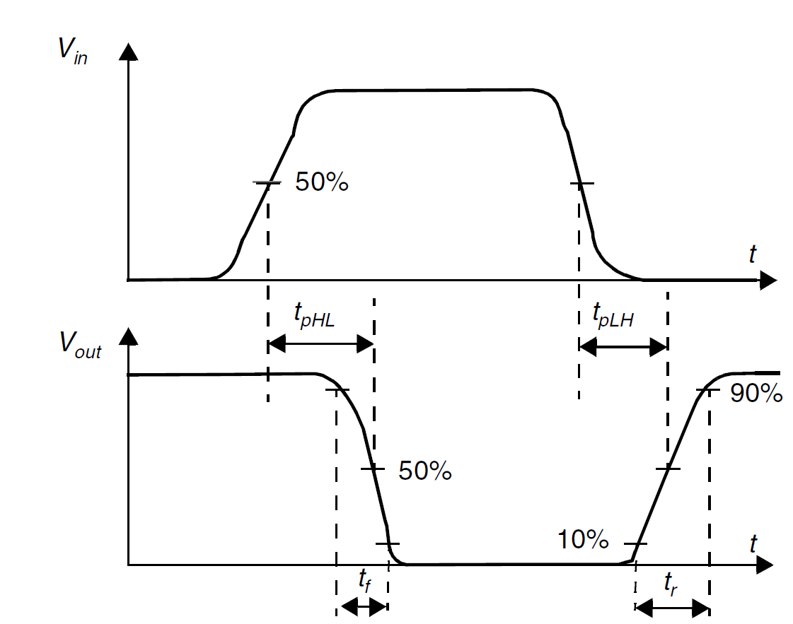
The propagation delay is a function of the slopes of the signals at the input and output. We can define rise and fall times as the time it takes for the signal at the output to transition between 10% and 90% (or vice versa) of the full-scale voltage. The rise and fall times are determined by the strength of the driving gate and the fanout and parasitics the gate has to drive at the output. RC delay models approximate the nonlinear I-V and C-V characteristics with an average resistance and capacitance over the switching range of the gate [15]. Effective resistance of a xtor is inversely proportional to its width and directly proportional to its length. In a velocity-saturated device, the current, hence the resistance, is independent of channel length. Series transistors are less velocity-saturated as they experience smaller \(V_{DS}\) drops, and hence, have smaller resistance than the sum of the two series resistances [15]. Wider xtors have proportionally larger gate and diffusion capacitances but increasing length only increases the gate capacitance and not the diffusion capacitance.
A simple model of a MOSFET assumes that the device is not conducting below \(V_{GS} < V_{th}\) and above the threshold voltage - —the larger the voltage difference between gate and source, the smaller the resistance of the conducting channel and the larger the current. Strong inversion of the channel is said to occur at twice the Fermi potential, a point where the substrate’s surface is inverted (n-type in an NMOS).
\[\phi _F = -\frac {kT}{q} \mathrm {ln}\bigg ( \frac {N_A}{n_i}\bigg )\]
The above equation gives the Fermi potential as a function of temperature, doping concentration, and intrinsic carrier concentration. Further increasing gate voltage doesn’t change the depletion layer width in the channel but draws additional electrons [11]. The threshold voltage is then defined as
\begin {equation} \label {eqn:threshold_voltage_mosfet} V_T = V_{T0} + \gamma (\sqrt {|V_{SB}-2\phi _F|} - \sqrt {|-2\phi _F|}) \end {equation}
Say \(V_{GS} > V_T\) and \(V_{DS}\) is small enough that the xtor is in triode region. The charge in the channel depends on \(V_{GS}-V_T-V(x)\) at every \(x\) and the drift velocity depends on the \(V_{DS}\).
\begin {equation} \label {eqn:ids_triode_derivation} \frac {I_{DS}}{W} = \mu _n \frac {dV}{dX} C_{ox} (V_{GS}-V_T-V(x)) \end {equation}
\begin {equation} \label {eqn:ids_triode} I_{DS} = \mu _n C_{ox} \frac {W}{L} \bigg [(V_{GS}-V_T)V_{DS}-\frac {V^2_{DS}}{2} \bigg ] \end {equation}
For small \(V_{DS}\), the quadratic term in eqn 9 can be neglected, giving a linear current-voltage relationship. Hence, this regime of operation is also known as linear regime or resistive regime.
In the case of triode region, every point in the channel obeyed the inequality
\[V_{GS} - V(x) > V_T \]
i.e., the channel was invereted throughout. If we increase \(V_{DS}\) further, this assumption fails. At the drain, the channel is said to be pinched off and
\begin {equation} \label {eqn:sat_condition} V_{GS} - V_{DS} \leq V_T \end {equation}
The channel is said to be saturated and the key point is that the voltage difference between any point in the channel and the source is now \(V_{GS}-V_T\). We can substitute \(V_{DS} = V_{GS}-V_T\) in eqn 9 to get the expression for the drain current in saturation regime
\begin {equation} \label {eqn:ids_sat} I_{DS} = \mu _n C_{ox} \frac {W}{2L} ( V_{GS}-V_T)^2 \end {equation}
Note that eqn 16 is valid for long channel MOSFETs that do not have channel length modulation. Here, the drain current is independent of \(V_{DS}\). This is not true in the case of short channel MOSFETs which have a finite output impedance - or channel length modulation.
In the previous models, we made an approximation that the drain current is zero when \(V_{GS} < V_T\).
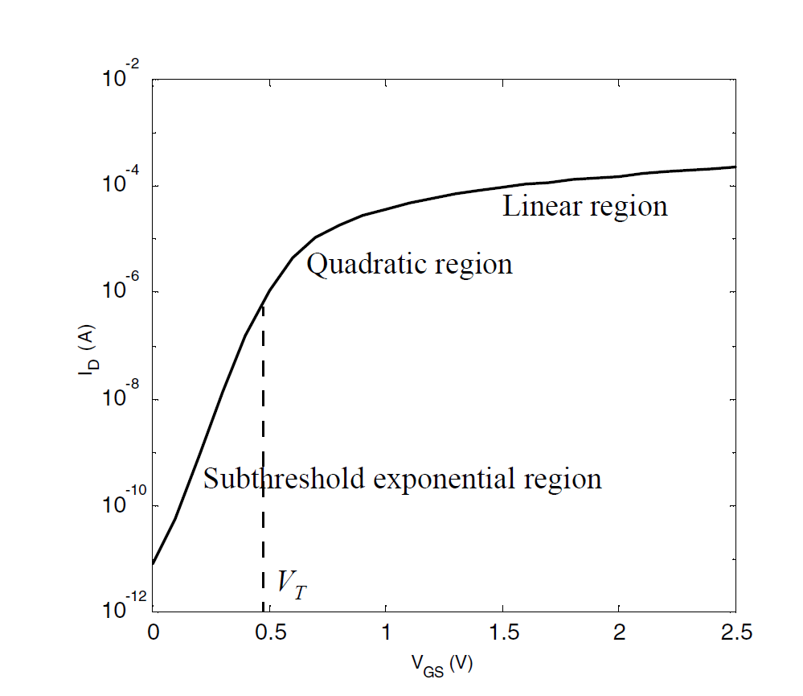
This assumption is not quite true as seen in figure 6. In fact, the current exponentially rises as given below
\begin {equation} \label {eqn:ids_subvt} I_{DS} = I_S \hspace {1mm} \mathrm {exp} \bigg ( \frac {V_{GS}}{nkT/q} \bigg ) ( 1- \exp \bigg ( \frac {V-{DS}}{kT/q} \bigg ) ) \end {equation}
The subthreshold slope (S = nkT/q) defines how steeply the current turns off with decreasing \(V_{GS}\). We want a higher slope (ideally 60 mV/decade for planar MOSFETs) and a lower lkg value at \(V_{GS} = 0V\).
There are two gate tunneling mechanisms - Fowler-Nordheim tunneling and direct tunneling - of which the former is used to program EEPROMs and is only important at high voltages and moderate oxide thicknesses [15]. Direct tunneling is the most important mechanism for gate leakage in thin oxides and is given by
\begin {equation} \label {eqn:gate_lkg} I_{lkg} = WA \bigg ( \frac {V_{DD}}{t_{ox}}\bigg )^2 \exp \big ( -B\frac {t_ox}{V_DD} \big ) \end {equation}
where \(A\) and \(B\) are technology-dependent constants.
Heaviky droped source/drain are subject to band-to-band tunneling (BTBT) nad gate-induced drain leakage (GIDL). BTBT occurs between the source/drain and the body the junction is reverse biased (which it is under normal operation). Higher body concentration decreases subthreshold leakage but can increase BTBT leakage. Trap-assisted tunneling due to the defects in silicon can exacerbate this kind of leakage.
GIDL occurs where the gate and drain partially overlap. The gate can deplete the \(n^+\) drain region when \(V_{GD} < 0\) (or gate has a negative voltage w.r.t source as in the case of DRAM turning off). BTBT tunneling occurs from gate to drain. It can be ignored for \(V_{GD} \ll V_{DD}\) [15].
Carrier mobility decreases with temperature. Threshold also decreases nearly linearly with temperature. Drain current at high \(V_{DD}\) decreases with increasing temperature but subthreshold leakage increases exponentially with temperature. BTBT increases slowly with temperature whule gate leakage is almost independent of temperature. This is summarized in table 1. Cooling helps system perfomance.
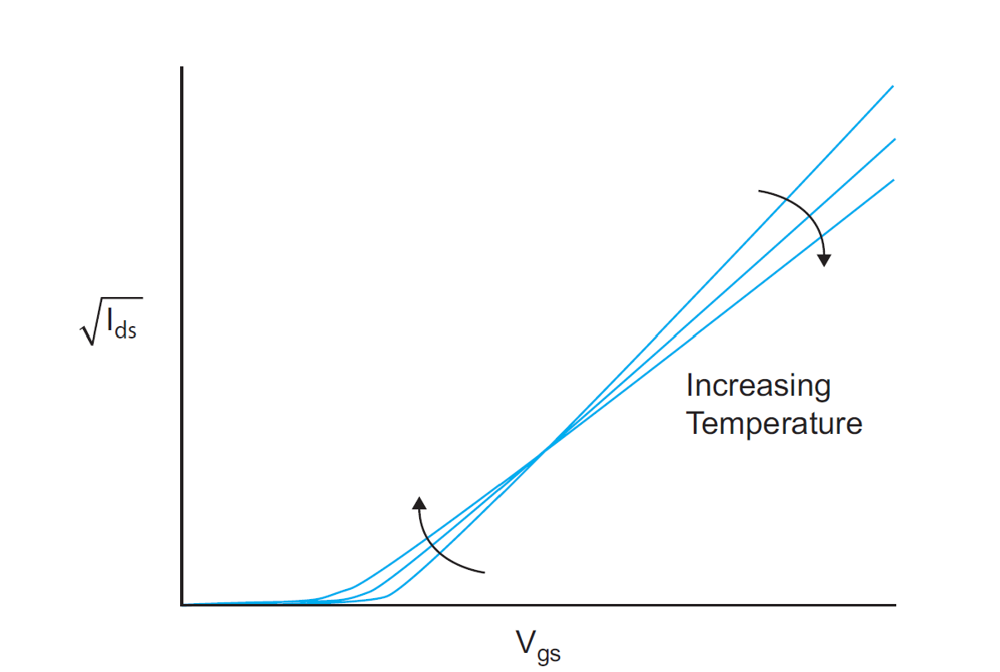
| Parameter | Temperature Dependence |
| Carrier mobility | Decreases with temperature |
| Threshold voltage | Decreases nearly linearly with temperature |
| Drain current (high \(V_{DD}\)) | Decreases with increasing temperature |
| Subthreshold leakage | Increases exponentially with temperature |
| Band-to-band tunneling (BTBT) | Increases slowly with temperature |
| Gate leakage | Almost independent of temperature |
The gate oxide has a capacitance per unit area given by \(C_{ox} = \epsilon _{ox} / t_{ox}\). From a drain current perspective, it is desirable to have a high \(C_{ox}\).
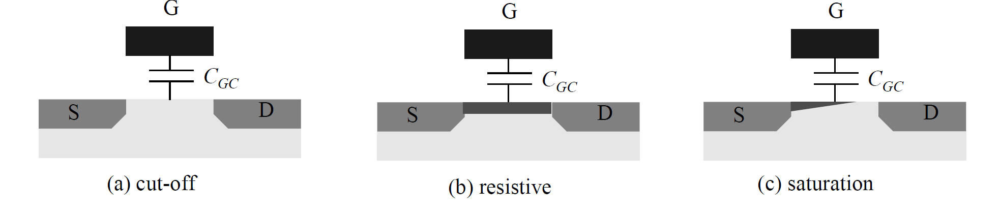
In figure 8, when \(V_{DS}=0\) and \(V_{GS}\) is ramped up, the total capacitance initially is just \(WLC_{ox}\) with \(V_{GS} = 0\). As the gate voltage increases, there is a depletion region that forms under the channel that pushes the charge centroid away from the channel, thus, decreasing the effective capacitance. At \(V_{GS} = V_T\), the channel inverts and the body terminal is now shielded from the gate by the channel, \(C_{GC,B}=0\). Since \(V_{DS}=0\), the total cap is now split equally between the source and drain, \(C_{GC,S} =C_{GC,D} = WLC_{ox}/2\).
Once the xtor is on the distribution of charge in the channel depends on \(V_{DS}\). If we use \(V_{DS}/(V_{GS}-V_T)\) as a proxy for the degree of saturation, we see in figure 8 on the right, that \(C_{GC,D}\) falls to 0 at higher saturation levels, while \(C_{GC,S}\) increases to \(2/3WLC_{ox}\). The total gate cap falls off from \(WLC_{ox}\) to \(2/3WLC_{ox}\).
We can also include a constant overlap capacitance term to the above expressions to model the physical overlap between the gate and S/D - \(C_{ov}\).
The reverse biased source-body and drain-body pn junctions contribute to junction (or diffusion) capacitance. The diffusion capacitance has two components - the bottom plate junction formed by the source/drain doping and the substrate doping, and the side-wall junction, formed by the source/drain doping and the \(p^+\) channel stop implant (basically defines the dimension of S/D into the plane). The total capacitance can be evalulated by knowing the area of each of these junctions at a depth of \(x_j\)
\[C_{diff} = C_jL_sW + C_{jsw}x_j(2L_s+W)\]
We discuss two kinds of \(V_T\) variation - decrease in \(V_T\) with channel length, and drain-induced barrier lowering (DIBL). We are going to ignore \(V_T\) changes dues to \(V_{SB}\).
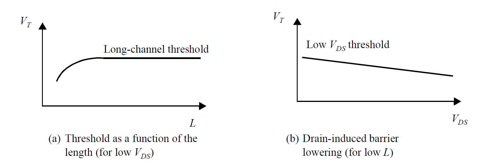
In a long channel device, we assume that the channel under the gate is depleted only by \(V_{GS}\). This ignores the depletion region formed by the substrate and source/drain regions. As channel length decreases, the fraction of these depletion widths become larger and now the gate has to effectively flip a shorter channel (or amount of charge) to invert the channel. This is called \(V_T\)-rolloff in smaller channel lengths since the gate can invert the channel at a lower voltage for the same doping concentration in the substrate for short channel devices as compared to longer channel ones.
Similarly, the drain-junction depletion region increases with \(V_{DS}\) and shrinks the channel in a short channel device. Once again, this causes a decrease in threshold voltage as \(V_{DS}\) is increased. This is called DIBL. For very high \(V_{DS}\) or short channels, this depletion region can short out the channel and the gate loses control of the device operation - the device is only modulated by \(V_{DS}\) then. This is known as punch-through.
In long channel devices, the velocity of the carriers is directly proportional to lateral electric field or \(V_{DS}\). At high electric fields, the mobility of carriers saturates due to collisions with atoms and other carriers in the channel. In typical planar p-channel MOSFETs, the saturation electric field is around 1.5 \(V/\mu m\) and the saturation velocity of the electrons is approximately \(10^5\) m/s. Holes in an n-channel device saturate at the same velocity but need a higher field strength to saturate [11]. Hence, velocity saturation effects are lesser in planar PMOS devices.
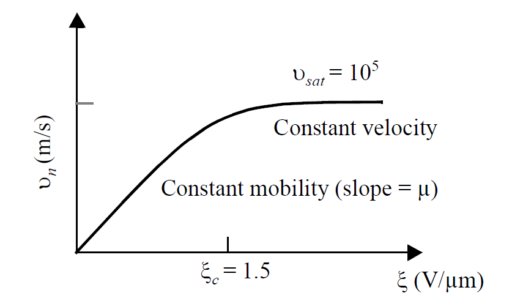
The critical electric field is given by
\begin {equation} \label {eqn:crit_E_vel_sat} E_c = \frac {2v_sat}{\mu _{eff}} \end {equation}
where \(\mu _{eff}\) is the slope of the constant mobility region in figure 10. If we define \(V_c = E_cL\), we can write
\begin {equation} \label {eqn:vds_sat} V_{DS,sat} = \frac {(V_{GS}-V_T)V_c }{(V_{GS}-V_T) + V_c} \end {equation}
From eqn 15, we can write an approximate expression for the saturated drain current
\begin {equation} \label {eqn:ids_sat} I_{DS,sat} \approx WC_{ox}v_{sat}(V_{GS}-V_T) \end {equation}
We see that in velocity saturation, the saturated current is not quadratically changing with overdrive voltage anymore but varies linearly.
Another consequence of velocity saturation is that transistors when placed in series drop lesser voltage across their source/drain as compared to individual transistors. This makes them less prone to velocity saturation and makes series transistors faster than expected [15]. For example, two stacked NMOS xtors deliver more than half the current of a single transistor of same width (so resistance is less than 2R - which a simple stacking model would give).
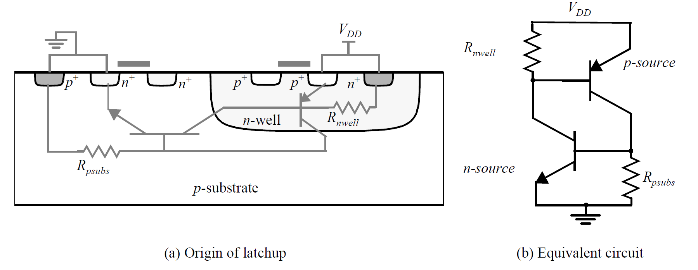
Table 2 reviews different scaling models. In full scaling, we keep the electric field constant as the device scales. This ensures there is no breakdown or secondary effects in the shorter channel device due to high electric field. Note that such scaling improves power by \(1/S^2\) where \(S\) is the scaling factor for both device dimensions and voltages. On the other hand, fixed-voltage scaling defines a supply voltage and then scales the dimensions alone. In this case, there is no improvement in power as there is no decrease in current. However, power density does go up quadratically with the scaling factor. In general, there are different scaling factors for the xtor dimensions and the voltages - since the voltage-scaling is fundamentally limited by the threshold voltage (therefore, \(S>U>1\) in the table 2).
| Parameter | Relation | Full Scaling | General Scaling | Fixed-Voltage Scaling |
| \(W, L, t_{ox}\) | \(1/S\) | \(1/S\) | \(1/S\) | |
| \(V_{DD}, V_T\) | \(1/S\) | \(1/U\) | 1 | |
| \(N_{SUB}\) | \(V / W_{depl}^2\) | \(S\) | \(S^2 / U\) | \(S^2\) |
| Area/Device | \(WL\) | \(1/S^2\) | \(1/S^2\) | \(1/S^2\) |
| \(C_{ox}\) | \(1/t_{ox}\) | \(S\) | \(S\) | \(S\) |
| \(C_{gate}\) | \(C_{ox} WL\) | \(1/S\) | \(1/S\) | \(1/S\) |
| \(k_n, k_p\) | \(C_{ox} W/L\) | \(S\) | \(S\) | \(S\) |
| \(I_{sat}\) | \(C_{ox} WV\) | \(1/S\) | \(1/U\) | 1 |
| Current Density | \(I_{sat}/Area\) | \(S\) | \(S^2 / U\) | \(S^2\) |
| \(R_{on}\) | \(V / I_{sat}\) | 1 | 1 | 1 |
| \(P\) | \(I_{sat} V\) | \(1 / S^2\) | \(1 / U^2\) | 1 |
| Power Density | \(P / Area\) | 1 | \(S^2 / U^2\) | \(S^2\) |
| Intrinsic delay | \(R_{on}C_{gate}\) | 1/\(S\) | 1/\(S\) | 1/\(S\) |
| Intrinsic energy | \(C_{gate}V^2_{DD}\) | 1/\(S^3\) | 1/\(SU^2\) | 1/\(S\) |
| Wire resistance | \(1/(W*T)\) | \(S^2\) | \(S^2\) | \(S^2\) |
Increased field in while keeping \(V_{DD}\) constant is increasing velocity saturation effects.
Some important static CMOS characteristics [11]
Figure 95 shows the voltage transfer characteristics (VTC) of an inverter. At \(V_{in} =0\), the NMOS device is off and the PMOS is in linear regime. As \(V_{in}\) increases, the NMOS device turns on in saturation region (\(V_{GS}\) is small but \(V_{DS}\) is large) and the PMOS slowly drops to saturation as well. The PMOS slowly turns off as the input is further increased and the NMOS falls into linear regime at \(V_{in} = V_{DD}\). The switching threshold is the point where \(V_{in}=V_{out}\). More on this is discussed in the SRAM chapter. Increasing the strength of the NMOS makes the switching threshold closer to GND while making the PMOS wider makes the switching threshold closer to \(V_{DD}\).
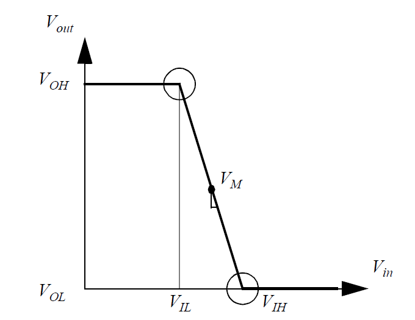
Figure 12 shows the piece-wise linear model for the inverter VTC.
From figure 13, we see that an NMOS can weakly pass a ‘1’ since the source voltage can only go as high as allowed by \(V_{GS} > V_T\). Similarly, a PMOS weakly passes a ‘0’. Note that when we stack xtors in series, the drops don’t stack since the drop depends on \(V_{GS}\) and not the drain voltage. On the other hand, if a degraded xtor drives the gate of another device, the drops stack up.
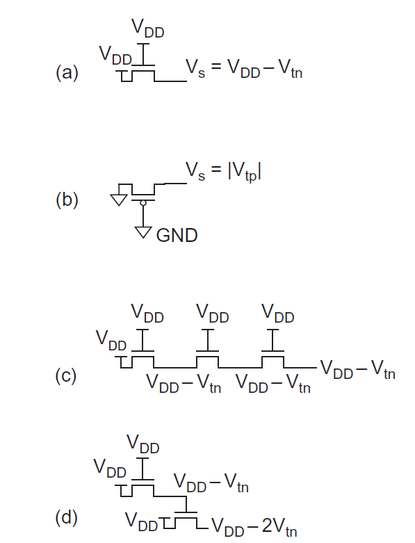
I like Prof. Sophia Shao’s lectures on logical efforts. Here are the relevant links
The SP22 version has branching effort in the slides.
Let’s start with a simple inverter and find its output delay. For a high-to-low transition, the equivalent resistance of the NMOS matters while for the low-to-high transition, the equivalent resistance of PMOS matters - basically whichever switch is on and is forming an RC-network. When we say equivalent resistance - we take some kind of average from the \(I_D-V_{DS}\) curves.
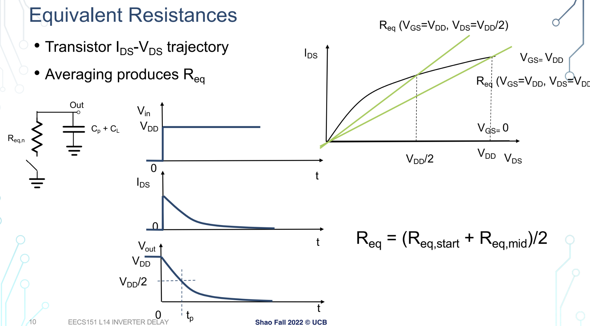 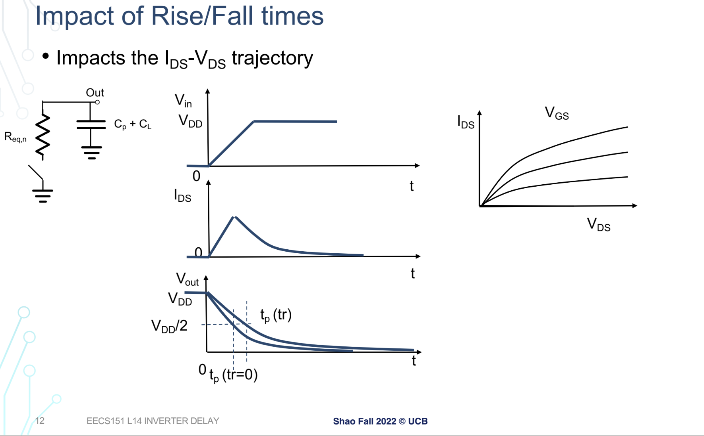
When there is a rise/fall time at the input, the gradual rise in the gate voltage causes an increase in current but it never quite reaches the peak as when there was no rise/fall time since the capacitor discharges a little (\(V_{DS}\) drops a little). Therefore, the discharging/charging is slower due to rise/fall times when compared to their absence at the input.
For the capacitance, we model the parasitics at the drains as \(C_d = \gamma C_{in}\). \(C_{in}\) is set by the width of the gate. Say the load cap is \(C_L\). We now have inverter RC delay below in eqn 17
\begin {equation} \label {eqn:inv_delay} t_p = \ln 2\ R_{eq} (C_p +C_L) = \ln 2\ R_{eq} (\gamma C_{in} +C_L) \end {equation}
We define Fanout (\(f\)) as ratio of load cap to the gate input cap.
\[f = \frac {C_L}{C_{in}}\]
We can now rewrite eqn 17 as follows with \(\tau _{inv}\) is independent of xtor sizing (width increases, R goes down and C goes up and this RC constant remains the same) - \begin {equation} \label {eqn:inv_delay_fanout} t_p = \ln 2\ R_{eq} C_{in} (\gamma + f) = \tau _{inv} (\gamma + f) \end {equation}
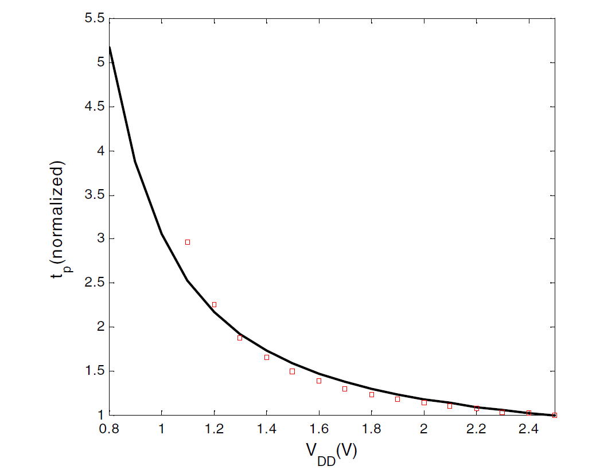
In figure 15, we see that the delay decreases rapidly initially as \(V_{DD}\) increases - this is due to the decrease in the ON resistance of the devices. The improvement tapers for larger \(V_{DD}\), however.
Say we have a chain of N inverters and we want to optimize for the delay across the chain. We first define a normalized delay
\begin {equation} \label {eqn:inv_delay_normalized} D = \frac {t_p}{\tau _{inv}} = \gamma + f \end {equation}
We now define path delay across the chain as \(\sum _{i=1}^{n} D_i \). \(\gamma \) is a process defined parameter and is sizing-independent. If each stage has a fanout of \(f_i\), then we have total delay \(D\) given by
\begin {equation} \label {eqn:inv_delay_path} D = \sum _{i=1}^{n} D_i = N \sum _{i=1}^{n} f_i + N \gamma \end {equation}
The only part in eqn 20 that we can optimize is the fanout part. We define Path Fanout (\(F\)) as the product of each stage’s fanout (\(F = \prod _{i=1}^{n} f_i\)) and by applying AM-GM inequality, we conclude that for min delay across the entire chain, we need to have each stage’s fanout equal to \(f_{opt} = \sqrt [n]{F}\). An example is shown in fig 16
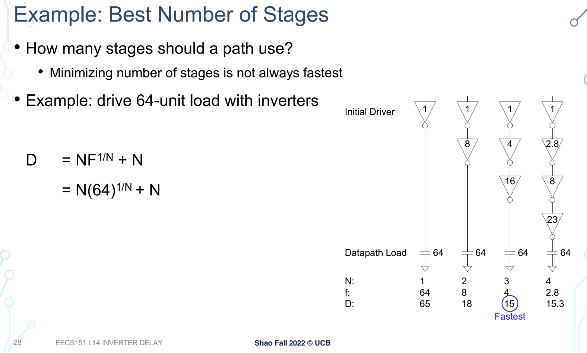
Now that we have an optimal fanout per stage, the total normalized delay from eqn 20 can be rewritten as follows
\begin {equation} \label {eqn:inv_delay_path_rewrite} D = NF^{1/N} + N \gamma \end {equation}
We can now use eqn 21 to find the optimal number of stages (\(N_{opt}\)) to drive a load, given we have an estimate for \(\gamma \). Figure 17 shows a shallow minima around 4 stages for an inverter chain with an example path fanout of 64. We also did a similar excercise is HW8 in 251A class. This can also be extended to other logic gates and we can find the optimal number of stages.
We can generalize eqn 17 to other logic gates and write an expression for normalized delay w.r.t to \(\tau _{inv}\).
\begin {equation} D \ (gate) \ = \frac {t_{p,gate}}{\tau _{inv}} = P + LE * FO \label {eqn:norm_delay} \end {equation}
where \(P\) is the normalized parasitic delay given by ratio of \( \ln 2 \ R_{eq,gate}C_{p,gate}\) to the parasitic delay of an inverter, \(FO\) is the fanout, i.e, ratio of load cap to the input cap of that particular logic gate, and \(LE\) is the logical effort. Let’s take a moment to define logical effort.
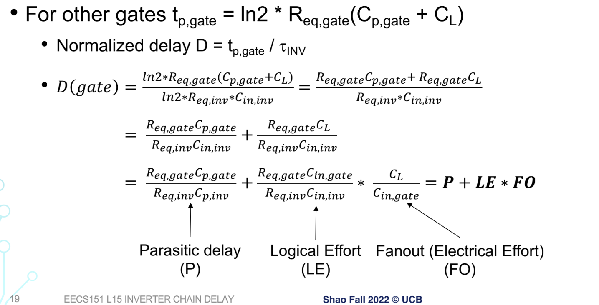
From figure 18, we see that logical effort is defined as the ratio of RC delays that come out as a result of design choices - sizing of the logic gates. To remove dependence on \(R_{eq}\), we size the logic gate such that it has the same drive strength as the inverter. Now \(LE\) just becomes the ratios of the input capacitances of the logical gate to that of the inverter.
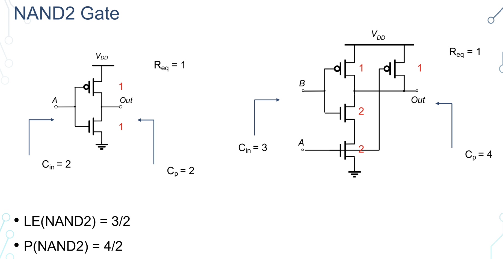
The whole excercise we did was so that given a gate - we have a scaling factor for the delay of this gate w.r.t an inverter which is independent of the widths, i.e., the same gate but with different sizing will have the same logical effort. Logical effort is fixed for a gate/topology.
Another thing to note is that the parasitic delay, \(P\), is calculated only by taking \(C_d\) of the gate and this is not counted in the fanout of that stage (basically parasitic cap is not counted as load in \(FO\) calculations). In figure 18, we see that we assumed \(C_{p,inv} = C_{in,inv}\) or \(\gamma = 1\). Similar to logical effort, \(P\) is independent of sizing as well since it is normalized to the delay of an inverter. [7] notes that exact parasitic delay calculation depends on which input in transitioning (since that decides which parasitc caps need to be charged/discharged). Parasitic delay grows linearly in case of parallel xtors but quadratically with series transistors (n xtors each n times larger to make \(R_{eq}\) equal to inverter drive). Increasing xtor size to the first order doesn’t change parasitic delay since the capacitance goes up but the resistance goes down [15]. Wider xtors can be folded in layout to further reduce their parasitics.
Finally, we note that in eqn 22, once we have a combinational circuit defined, we can only play with the fanout - \(LE\) and \(P\) are already defined by the gates we used to synthesize the circuit.
Given a random chain of \(N\) gates, we can use eqn 22 to find out the total delay from input to the output
\begin {equation} \label {eqn:single_stage_delay} \ Delay \ = \sum _{i=1}^{N} (P_i + LE_i*FO_i) \end {equation}
From the previous optimizaiton for an inverter chain, we see that the AM-GM inequality can be applied to solve for the min delay through the chain of random gates. This motivates us to define a few more terms that are the products of individual stage parameters (as opposed to sum). We also know that the normalized parasitic delay is well defined for each gate - and we cannot optimize it [14].
Therefore, we only have individual stage effort to optimize - \(SE_i = LE_i*FO_i\). Let’s also introduce branching. There is an additional branching effort now - we need to drive the gates not on the path of interest too! Figure 20 summarizes the use of logical effort method to size the gates optimmally for min delay.
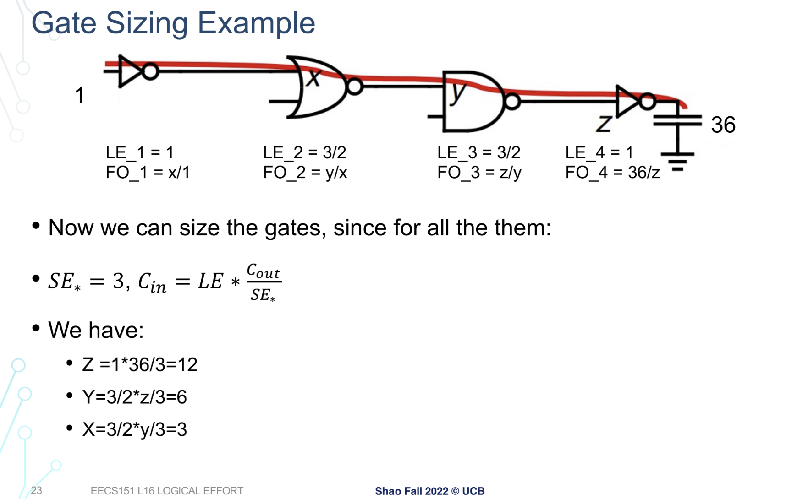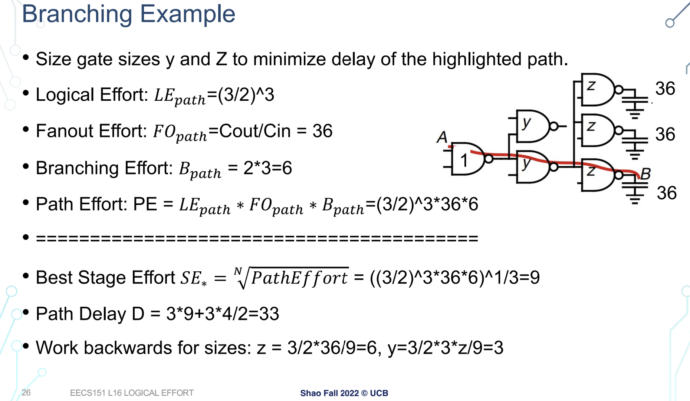
From eqn 23, can we extend this to a multistage logic network? Let us consider the example in figure 20. Since the logical effort does not depend on sizing of each logic gate, we can define a path logical effort, \(G\), which is the product of logical efforts of each stage.
\[G = \Pi g_i\]
Why product? Remember from previous section, we can only optimize for stage effort, or \(LE_i*FO_i\). The parasitc delay comes as an unwanted consequence of the topology/gates chosen. We can, therefore, also define a path fanout, \(H\),
\[H = \Pi h_i = \frac {C_{out}}{C_{in}}\]
A total path effort can be defined now, similar to stage effort, \(F\),
\[F = GH\]
We can also define a branching effort,
\[b = \frac {C_{onpath}+C_{offpath}}{C_{onpath}}\]
and consequently, a path branching effort, \(B\)
\[B = \Pi b_i\]
We rewrite the path effort,
\[F= \Pi f_i = GBH\]
From the above equation, we see that the product of the stage efforts is a constant and depends on the topology and the input and output capacitances. The delay, however, is the sum of these stage efforts. We can use the AM-GM inequality to arrive at the same eqn as for a chain of inverters in eqn 20. Differentiating the same eqn w.r.t number of stages, we see that the delay is minimized rougly for a stage effort of 4 (\(SE_i =4\)) and the total number of stages is
\begin {equation} \label {eqn:ideal_num_stages} N = \log _\rho F \end {equation}
Note that eqn 24 is a function of \(\gamma \) as shown in figure 17. For a smaller \(\gamma \), the curve is shallow and we can choose greater number of stages.
So far each logic gate was driving the gate cap of another logic gate. How do we size a transmission gate? It can only be done in some context of another gate [7]. This is because when we talk about logical effort, we are interested in the equivalent resistance that the gate presents to the charging of the load cap. A transmission gate cannot drive any load by itself and therefore, there is no meaning in calculating its logical effort in a standalone scenario.
This video does a good job of explaining how to calculate logical effort in case of an inverter driving the output through a transmission gate. First key idea is that in a transmission gate, the NMOS is good at passing a zero while the PMOS, at passing a one. So, when we ask the NMOS to pass a one (input at drain), it can only pass \(V_{DD} - V_{th}\) - we model this by saying that the resistance from low-to-high transition is twice that of high-to-low (when the NMOS is asked to pass a zero). Likewise for PMOS. This is explained in 251B slides from my year (SP2025) as shown in figure 21. Note that in this figure, widths of the N and PMOS are not mentioned - I used [7] as reference and worked through a couple of examples in extracting LE for a given gate and transmission gate combo.

Using figure 21, we first develop an equivalent resistance model for NMOS and PMOS individually for LH and HL transitions. Say for a given technology, NMOS is twice as strong as PMOS, i.e., a normal CMOS inverter has width \(W\) for NMOS and \(2W\) for PMOS. Let us build a transmission gate where the NMOS and PMOS have same widths of \(W\). The NMOS in HL transition has a resitance \(R\) while a LH resistance of \(2R\). Similarly, a PMOS will have a LH resistance of \(2R\) (since its width is W and not 2W), and a HL resistance of \(4R\). This is summarized in figure 22. Since the N and PMOS devices are in parallel, we take the average resistance each devices contributes over the HL and LH transitions and put them in parallel. Finally, for this sizing and strengths of the devices used, we get an equivalent resistance (\(R{eq}\)) for the transmission gate of \(R\).
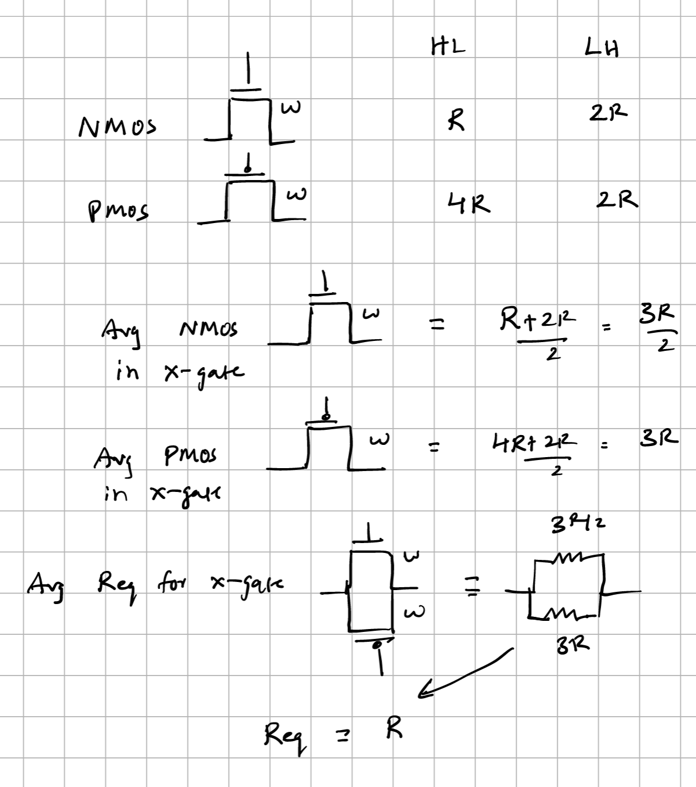
Let us now drive the transmission gate with two logic gates and calculate the logical effort through each signal path. Another key idea here is that, we need to pick a reference inverter whose sizes match the equivalent resistance from \(V_{DD}\) to GND to that of the gate. What I mean is that - we cannot do logical effort calculations when the drive strengths of the reference inverter and the combo of the logic gate and transmission gate are different. Figure 23 illustrates this point and proceeds to calculate the logical effort for each gate. The results are verified from [7].
 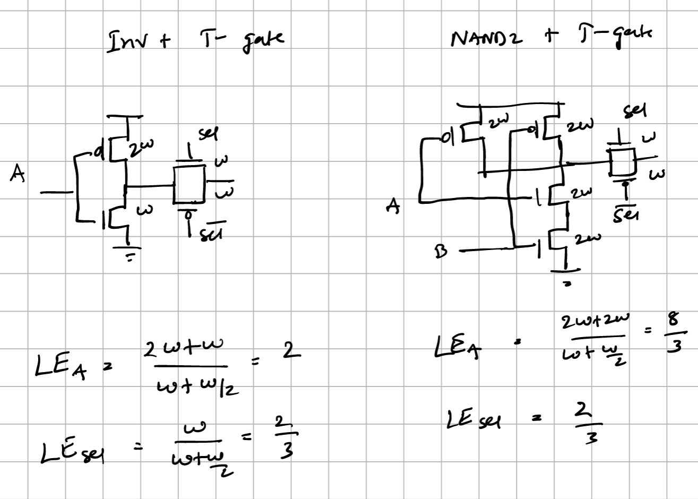
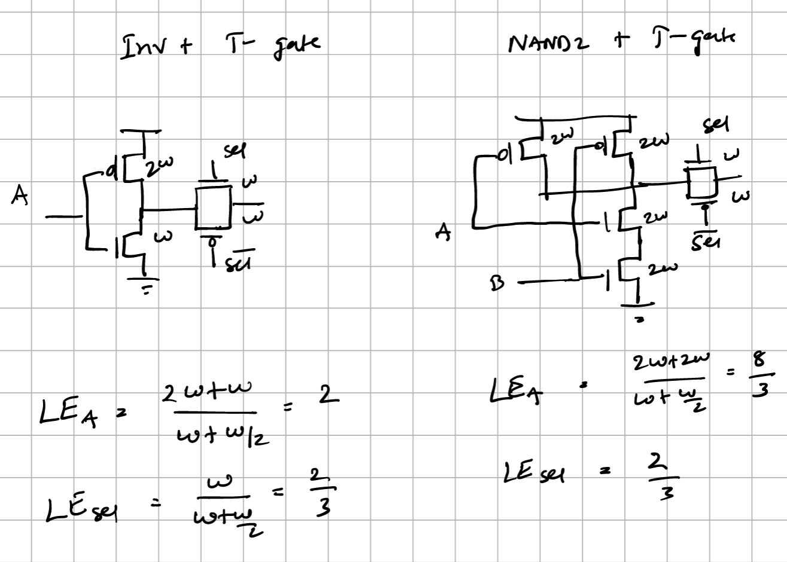
Finally, we end the discussion on this topic with calculations of the parasitic delay. Let’s take the example of an inverter plus a transmission gate combo. There are two parasitic components - one at the output of the super gate and another at the internal node between these two gates. For the one at the output of the two gates, the calculation is straightforward since the reference inverter is the same as what we used in the logical effort calculations. However, for the internal node, the signal path is not going from \(V_{DD}\) to GND via the output - the equivalent resistance is different. In fact, the equivalent resistance is just \(R\) since the internal node only sees the inverter part driving charge onto it. The reference inverter is therefore identical to the inverter used in the super gate. This is illustrated in figure 24 along with the derivation of the parasitic delay.
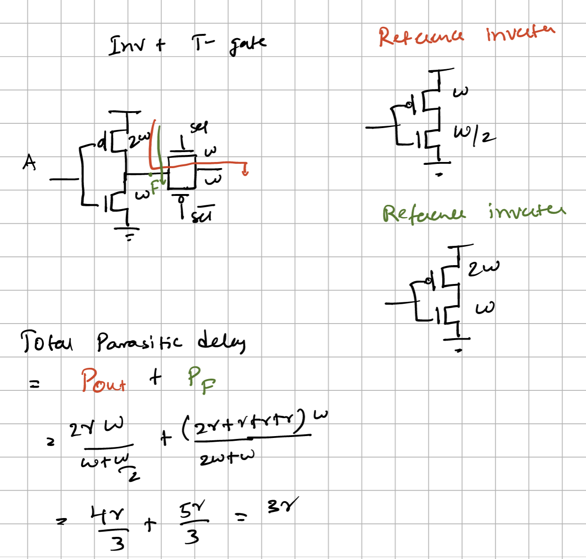
For dynamic gates (where clk is involved), logical effort can be less than 1 - video. This means that these gates can be faster than their static CMOS counterparts. The above video demonstrates this with a couple of examples - NAND2 and INV in dynamic vs CMOS logic. Note that the reference inverter here is the static CMOS (even if you are trying to calculate the LE of a complex dynamic logic gate, you take the static CMOS inverter as reference). [1] has more notes on dynamic CMOS. Figure 25 illustrates an example of logical effort calculation for two implementations of a dynamic inverter.

Let’s start with basics of \(I_D vs V_{DS}/V_{GS}\) curves. In long channel devices, once \(V_{GS} > V_TH\), we have two regions of operation - triode and saturation (not to be cofused with velocity saturation).
Set of eqns in ??, basically are saying that the current in the channel is charge times velocity. We can model the velocity of the carriers as
\begin {equation} \label {eqn:vel_model} v = \frac {\mu _{eff}E}{\bigg (1+\bigg (\frac {E}{E_c} \bigg )^n\bigg )^(1/n)} \end {equation}
In velocity saturation, we see that the charges can only move at a constant speed despite the increase in \(V_{DS}\). Let us pick \(n=1\) and see how the drai current looks in triode and saturation regions under velocity saturation.
Solving for \(V_{DSat}\), we get
\[V_{D,sat} = \frac {(V_{GS}-V_{TH})E_CL}{V_{GS}-V_{TH}+E_CL}\] \[I_{DS,sat} = \frac {\mu C_{ox}}{2}\frac {W}{L}\frac {(V_{GS}-V_{TH})^2}{(V_{GS}-V_{TH})+E_CL}\]
When we calculate logical effort for devices in velocity saturation, we equate the saturation currents (not linear region) in the N and PMOS. Remember that stacked transistors act as a single transistor of length \(nL\). Figure 26 goes through an example.
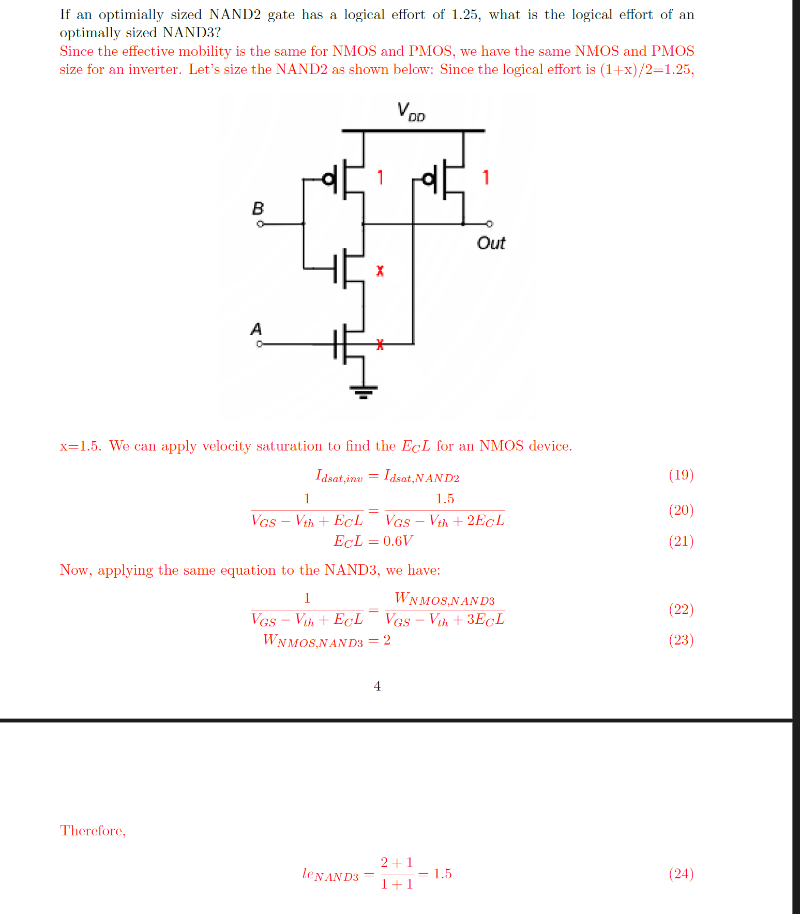
Here are some limitations of the logical effort models [15]
Parasitics do not model \(C_{gd}\) accurately. This couples the input to the output in an effect known as bootstrapping. \(C_{gd}\) can increase the effective gate capacitance that needs to be driven at the input or the parasitic cap that needs to be discharged at the output.
Figure 27 shows an example where in one inverter we consider the effect of \(C_{gd}\) and don’t for the other. As the node x goes low, a,c both go high. Node b experiences this rise at a through \(C_{gd}\) and rises (not because the PMOS was pulling it up but just by its own bootstraps) intially. After a while, the nodes b,d are pulled down since the NMOS turns on. b falls later than d due to the charge on the cap from the bootstrapping effect. Similarly, as b falls due to the NMOS discharging it, it tugs on a and makes it drop a bit before the PMOS overpowers it and pulls up. Therefore, node a takes longer than c for charging up completely.
How do we address asymmetric branching and reconvergent fanout as shown in figure 28?
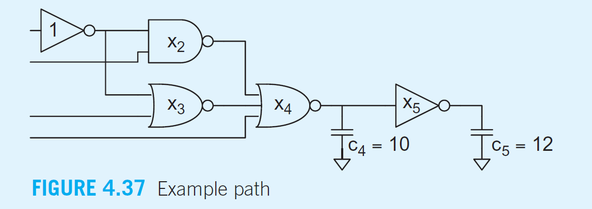
Note that in figure 28 \(x_i\) indicates the drive strength as a multiple of unit inverter. In figure 18, we see that
\[\mathrm {LE} = g = \frac {R_{eq,gate}C_{gate}}{R_{eq,inv}C_{inv}}\]
If we define the denominator as 1, then any arbitrary gate has the drive [15]
\[x_i = \frac {C_{gate}}{g} = \frac {1}{R_{eq,gate}}\]
and the delay can be rewritten in terms of drive as
\[d_i = \frac {C_{out}}{x_i}+p_i\]
Now we can write the delays for each stage in figure 28.
\[d_1 = \frac {4}{3}\frac {x_2}{1} + \frac {5}{3}\frac {x_3}{1} + 1\] \[d_{2,2} = \frac {7}{3}\frac {x_4}{x_2} + 2\] \[d_{2,3} = \frac {7}{3}\frac {x_4}{x_3} + 2\] \[d_3 = \frac {x_5+10}{x_4}+3\] \[d_4 = \frac {12}{x_5}+1\]
In sequential ckts, the order of data transfer/switching events matters - changing the order/timing can result in a functional failure. The different types of synchronous systems are
Mesochronous system - the signals have same frequency as the local clock but an unknown phase offset (which is still fixed/no change over time). For example, when talking across clk domains (even if they have the same frequency), it’s hard to know the phase relationship of the input signal at the receiver’s clk domain. We need a synchronizer to synchronize the data in the RX module. In figure 29, signals D1 and D2 are synchronous with clk A but mesochronous with clk B. The variable delay line is used to tune the phase of the signal D2 so that it matches up with clk B.
Plesiosynchronous system - The word “plesio” in Greek means near. The signals are nominally the same frequency but due to variations have slight differences in the frequency w.r.t the local clk. This causes a phase offset which drifts over time (unlike the mesochronous system where the phase offset was fixed but unknown). This typically happens when two modules use their own seprate crystal oscillators - there’s some ppm difference in frequencies between the two crystals that can lead to plesiosynchronocity (made up word). As shown in figure 30, the timing recovery module reconstructs the clk from the data sent at clk C1’s rate. The clk C3 that it generates is mesochronous to the TX module. A FIFO is used to buffer the data and then clocked at C2. If the transmit frequency is faster than C2, then data is dropped (if FIFO is full), and data is duplicated in the other case [11].
Ideally, the entire clock period id available for computation in the combinational block. This is not possible in reality due to the sequencing overhead introduced by latches and registers. Sequencing overhead of for registers include [15] -
Figure 31 illustrates the above definitions for an edge-triggered system.
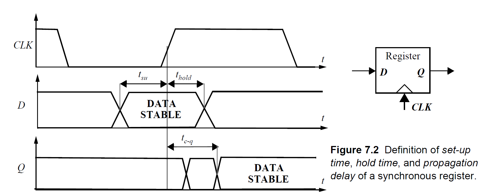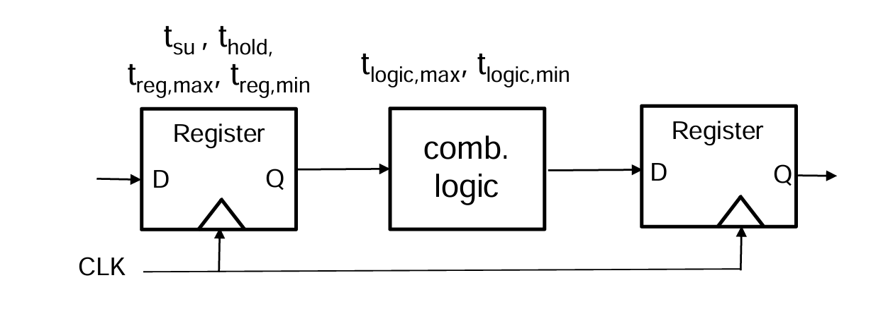
For a flip-flop based system, we calculate the maximum clk frequency by taking the worst case delay in between two registers. From figure 31, we see that
\begin {equation} \label {eqn:max_clk_ff_no_skew} T_{clk} \geq T_{c-q, reg1} + T_{logic,max} + T_{su, reg2} \end {equation}
From eqn 26, if there are no clock non-idealities, we see that the clk period has to accomodate the clk-q delay of the first register, the max combinational delay from the blocks in between the two registers, and the setup time for the second register. Similarly, the hold time of the second register imposes a condition on minimizing the delay from combinational logic and the clk-q delay of the first register.
\begin {equation} \label {eqn:min_hold_no_skew} T_{c-q, reg1} + T_{logic,min} \geq T_{hold, reg2} \end {equation}
Note that eqn 27, we see that hold time imposes no constraints on the max clk period.
In figure 32, we see that the actual clk-Q delay, \(t_{CQ}\), depends on when the data arrives w.r.t the clk edge. Say the data arrives before the clk edge by \(t_{DC}\). If \(t_{DC}\) is large, i.e., data arrives much before the clk edge at input D, the clk-Q delay is the shortest. It’s lower bound is the contamination delay of the register and increasing \(t_{DC}\) doesn’t improve this delay any further. Since the total D-to-Q delay, \(t_{DQ}\), is the sum of \(t_{DC}\) and \(t_{CQ}\), it increases linearly in this regime.
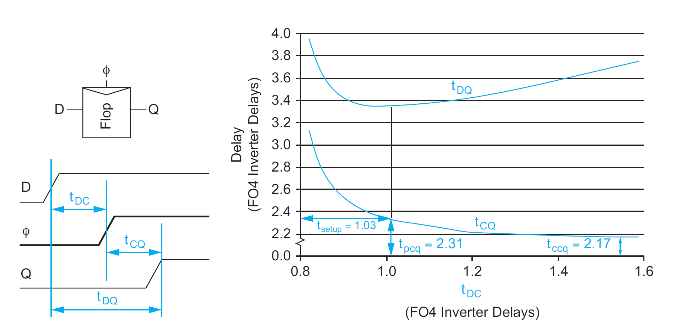
When the data starts arriving closer to the clk edge, \(t_{DQ}\) initially starts decreasing due to decreases \(t_{DC}\) but the actual clk-to-Q delay increases as the data arrives closer and closer to the clk edge. This clk-to-Q delay, \(t_{CQ}\), dominates the overall delay in this regime. There is a minima in \(t_{DQ}\) between these two regimes where \(t_{CQ}\) has a slope of -1 [15]. We use this point where \(t_{DQ}\) is minimized to define the setup time \(t_{DC,setup}\) and nominal clk-to-Q delay \(t_{cq}\).
In general, the delay times differ for 0 and 1 inputs. [15] notes that the setup time for 0 is longer than the setup time for 1 but the hold time for 0 is shorter than the hold time for 1 (why?).
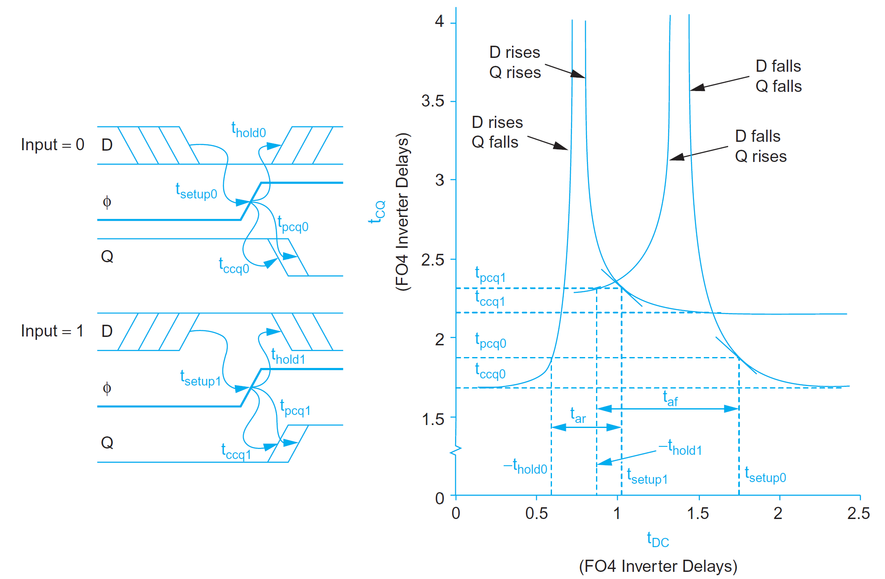
We define an aperture time, \(t_{af}\), which is the sum of the setup and hold times. During this window, the data at the input must not transition - otherwise the output can be stuck in a metasable state or take an unbounded time to settle [15].
The same analysis can be done for a latch-based system as shown in figure 34. On the x-axis, we plot the arrival of the data w.r.t to both the rising and falling clk edges. Note that for a positive level sensitive latch, the falling edge of the clk is more important. If the data arrives much before the falling edge, \(t_{DQ}\) is independent of \(t_{DCf}\) and only depends on the contatmination delay through the latch. However, if the data arrives too early, earlier than the rising clk edge, \(t_{DQ}\) increases linearly with \(t_{DCr}\). On the opposite end, when the data arrives to close to the falling edge, the clk-to-Q delay starts to rise sharply. We define the setup time at the knee of this curve [15] as shown in figure 34.
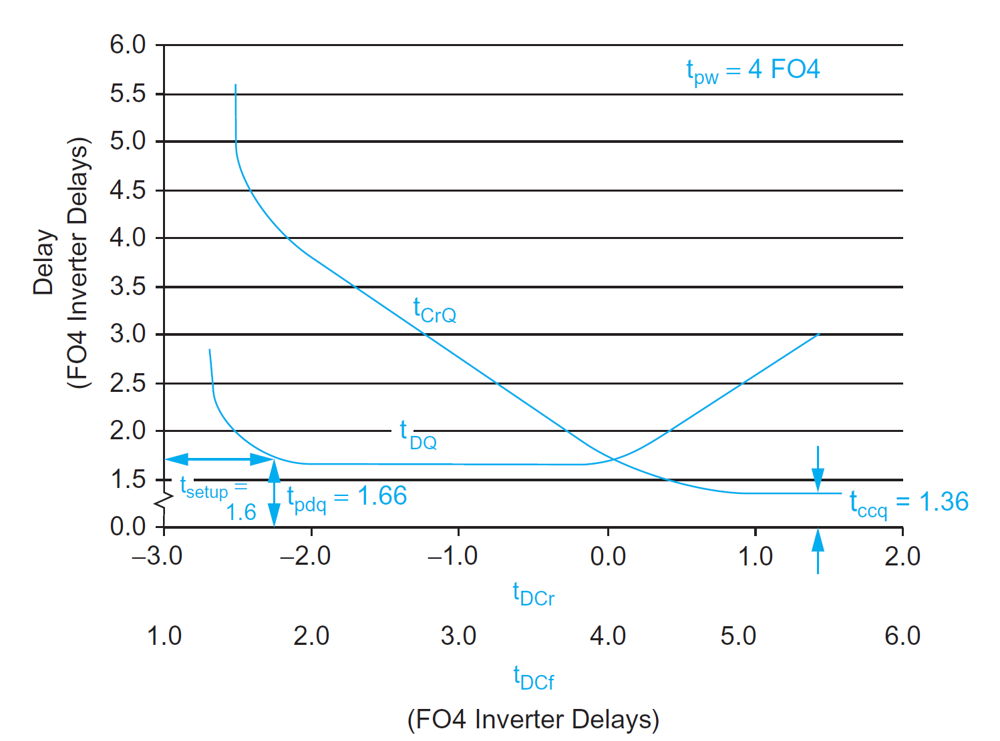
Note that all these delays vary with input slope, supply voltage, and temperature.
Clock skew and clock jitter are the two main kinds of non-idealities. The spatial variation in arrival time of a clock transition on an integrated circuit is commonly referred to as clock skew [11]. Clock skew is caused by static path-length mismatches in the clock load and by definition skew is constant from cycle to cycle Figure 35 shows example of a positive clk skew (a negative clk skew is when CLK2 arrives before CLK1).
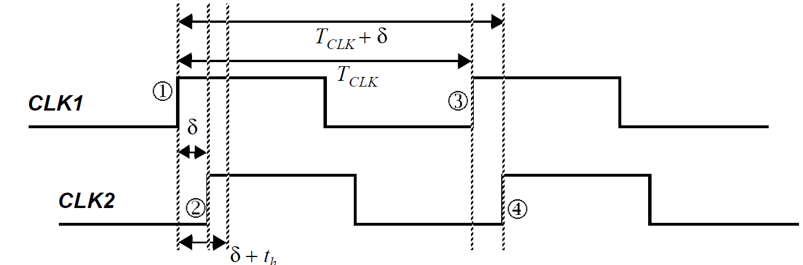
Let us take the example of the positive clk skew from figure 35 to see how eqn 26 changes. Register 2 now has \(T_{skew}\) more time to wait before it is triggered, i.e, the clk period can be faster since the skew introduces some delay which makes sure there is enough time for register 2 to evaluate the correct inputs.
\begin {equation} \label {eqn:max_clk_ff_clk_skew} T_{clk} + T_{skew} \geq T_{c-q, reg1} + T_{logic,max} + T_{su, reg2} \end {equation}
On the other hand, clk skew at register 2 means that the combinational logic and the clk-q delay from the first register have to be slower to ensure there is no hold time violation. This changes eqn 27 to the following
\begin {equation} \label {eqn:min_hold_clk_skew} T_{c-q, reg1} + T_{logic,min} \geq T_{hold, reg2} + T_{skew} \end {equation}
In case of a negative clk skew, eqn 29 holds unconditionally (since the clk edge arrives before the data is settled at the input of register 2). In case of a positive clk skew, we need to ensure eqn 28 is held true.
[11] suggests routing in opposite direction (introducing negative clk skew) to avoid disasters - but what does this mean in physical layout?
Clock jitter refers to the temporal variation of the clock period at a given point — that is, the clock period can reduce or expand on a cycle-by-cycle basis. It is strictly a temporal uncertainty measure and is often specified at a given point on the chip [11]. Figure 36 shows how the temporal uncertainty in the clk can affect timing in sequential ckts.
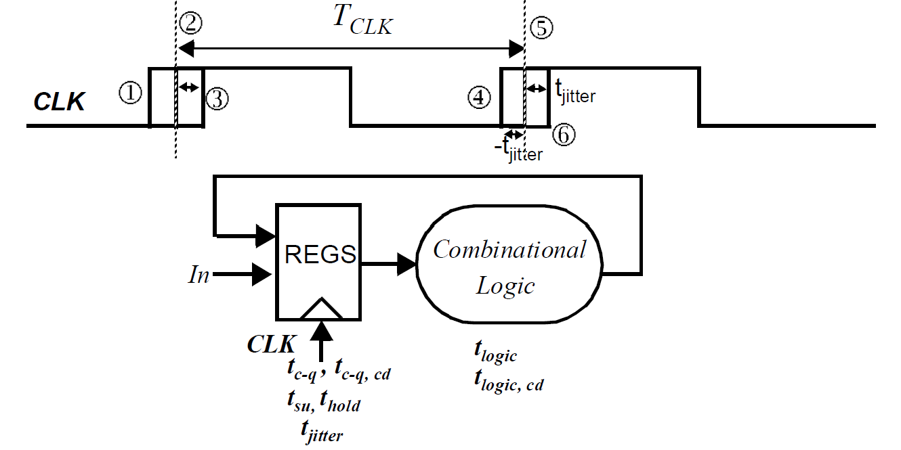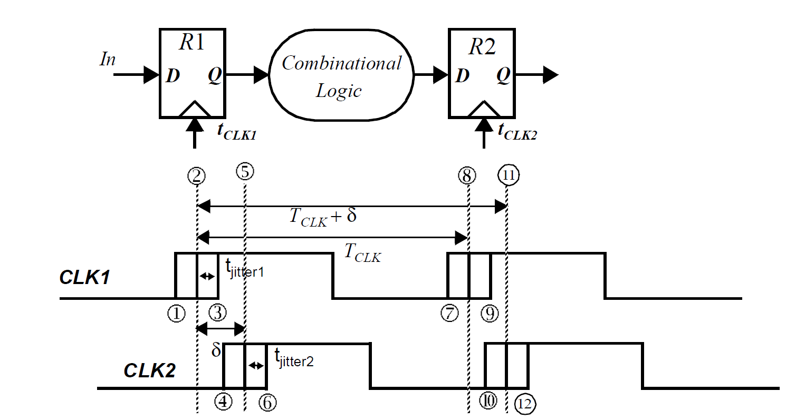
From figure 36, we see that the clk has effectively shrunk by \(2*T_{j}\) (worst case). The delays from the clk-q of register 1, the max delay from the combinational logic, and the delay from the setup time constraint of register 2, have lesser time to work with. Assuming the clocks to both registers have the same jitter, we can rewrite eqn 26
\begin {equation} \label {eqn:max_clk_ff_clk_jitter} T_{clk} - 2T_{j} \geq T_{c-q, reg1} + T_{logic,max} + T_{su, reg2} \end {equation}
In case of hold time, in the worst case, jitter can delay the clk at the second register and speed it up a the first register (edge 1 to edge 6 in figure 36). Similar to clk skew, we can rewrite eqn 27 as follows
\begin {equation} \label {eqn:min_hold_clk_jitter2} T_{c-q, reg1} + T_{logic,min} \geq T_{hold, reg2} + 2T_{j} \end {equation}
We can now combine the eqns for both clk skew and jitter to arrive at the following
Tips to deal with clk skew and jitter [11]
Race conditions refer to a general class of timing failures that occur because of a “race” between the clock and the input (or an enable and an input) signals. Let us take an example of a MUX-based register as shown in figure 37. When there is an overlap between clk and its complement, there is a direct path from D to Q - which is not desirable at any state of operation for a register. We’d ideally want a clear demarcation between sample/hold phase and output driving phase. In this case, however, the output is dependent of whether the input arrived before or after \(\bar {CLK}\) - there is a race between D and \(\bar {CLK}\) that decides \(Q\).

This is an example of a race condition. MUX-based registers suffer from this issue. One way to fix is this is to create two non-overlapping clk phases.
If a logic block finishes before the clock period, it has to idle till the next input is latched in on the next system clock edge [11]. To make the best use of the latch-based system, we need a two-phase clk. Figure 38 demonstrates an example with all latches.
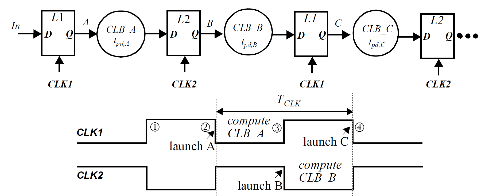
In a register-based system, once the computation of the combinational block between two registers is done with the computation, it sits idle until the next clk edge (pos or neg). In a latch, however, we don’t have to wait to pass on the result of the computation to the next stage - we can send it as long as the clk is high (or low). This lets us increase the length of the critical path, or conversely, make the clock faster!
Before we dive deeper into this idea, let us first examine how to define setup time and hold time. Let us say we have a positive latch. The falling edge is the latching edge for such a latch. Therefore, setup time is the time before the latching edge (falling edge in this case) by which the data input must be stable. Similarly, for some implementations of the latch, the data must be held for certain time after the falling edge - which is called the hold time. Some implementations have a hold time of zero. Figure 39 demonstrates these ideas.
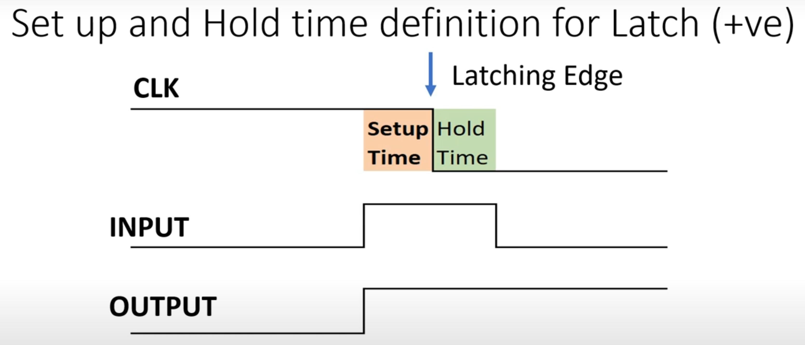
Let us take HW3 Problem 3 from EECS251B (2025) to understand slack passing or time borrowing. In figure 40, the combinational block A has a \(t_{pd,A}\) of 2 ns and B has a \(t_{pd,A}\) of 1 ns. For simplicity, setup and hold times for the registers (or latches is zero) but the clk-q delay is 0.1 ns.
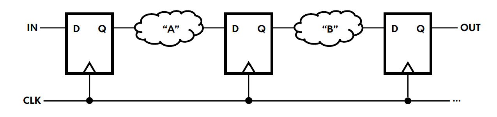
In case where all the 3 sequential blocks are positive edge triggered registers, the max clk frequency is dictated by the critical path which includes block A.
\[T_{clk} \geq T_{clk-Q,R1} + T_{pd,A}\]
Let us replace the middle register with a positive level sensitive latch. For a positive latch, the latching edge is the falling edge of the clk. Therefore, combinational block A now has additional half cycle to finsih processing. whaterver slack is left from this 1.5 clk cycles is simply passed on to the next block since the data can be passed immediately after conmputation (as long as it is done before the latching edge). B still needs to be done at the rising edge of the third clk cycle.
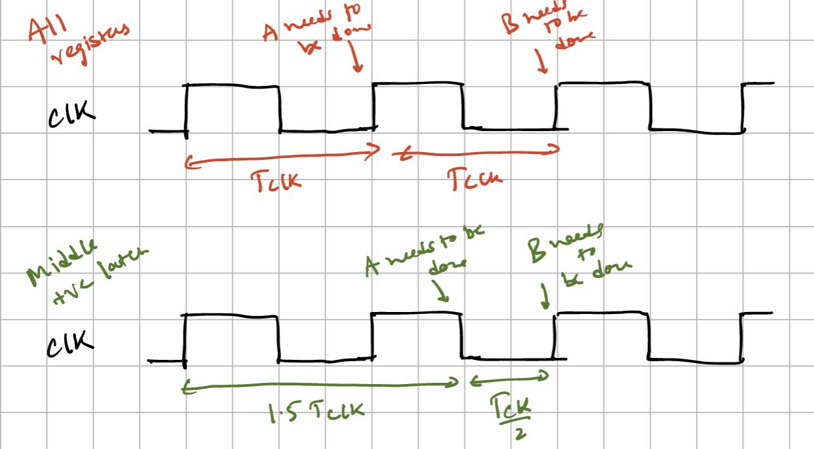
As show in figure 41, we can now calculate the max clk frequency as follows
\[1.5 T_{clk} \geq T_{clk-Q,R1} + T_{pd,A}\] \[2 T_{clk} \geq T_{clk-Q,R1} + T_{clk-Q,L} + T_{pd,A} + T_{pd,B}\]
Essentially, we exploited the fact that the critical path can take longer to finish computation than 1 clk cycle and this is what lets us run a faster clk than in the case of a flip-flop-only system. We note two things here, since block A is the critical path here, we use a positive level sensitive latch. If block B were the critical path, since we need to give that block additional time to finish, we replace the middle register with a negative latch so that block A can be done within \(0.5 T_{clk}\) and the other \(1.5 T_{clk}\) can be taken up by the critical path. Along the same lines, the replacement wouldn’t have worked if for the same setup as in figure 40, if we used a negative latch in the middle. We can no longer borrow/pass time.
Since critical path needs more time, we need to create conditions to let it take more time than \(T_{clk}\). This decides the level-sensitivity of the latch.
In a two-phase clk scheme, we give a guardband of \(t_{non-overlap}\) between the two clk phases and this eats into the time that can be borrowed between stages.
Loops may borrow time internally, but the entire computation must be finished within the allocated cycle [15]. Figure 42 shows a self-bypass loop where time bororwing can happen internally across the half cycles but the entire path must fit in one clk cycle. Most critical paths occur in such loops - example ALU in a pipelined processor finishes a computation and then sends the result back to itself before the next operation.
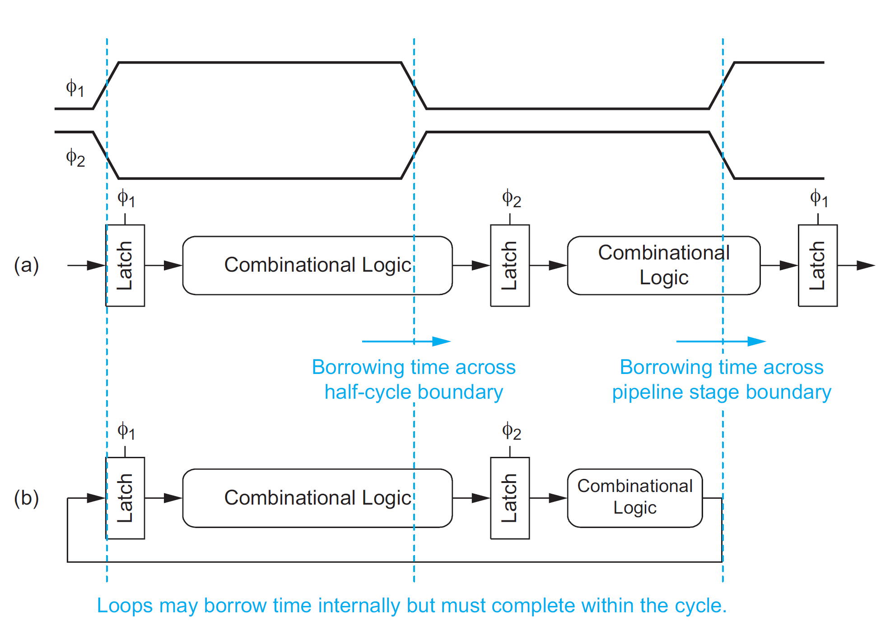
I couldn’t find a lot of notes for this but [15] has some excercise problems on this.
Say each combinational block in the pipeline starts the computation when a “START” signal is asserted and can asset a “DONE” flag when it’s done with the computation. We also assume that there is a “ready-valid” interface between the different blocks in the timeline so that each block knows when to pick the right data or when to signal that it is available to read new data. We can implement a self-timed logic-based pipeline as shown in figure 43.
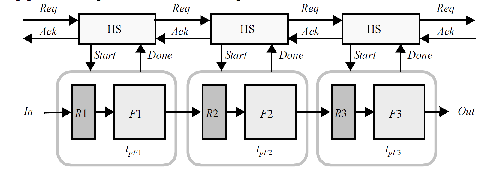
Let’s go through how this works
This is essentially a ready-valid interface. It’s advantages over synchronous logic includes
Here are two ways of generating the done signal
Dual-rail coding: In this approach, we use two bits to indicate if the block is in transition/reset, not done, or done. As shown on the left in figure 44, the state 00 refers to when the combinational block is still computing or being reset. Both 01 and 10 can signal a done. This is achieved using a differential ckt shown in the same figure. When start is low, the PMOS devices pull up the input of the inverters, resulting in the 00 state. When the inputs to the combinational block are asserted along with the start signal, one of the two pull-down networks evaluates to a high and pulls one of the bits down. This raises the done flag.
[11] tells us that the done signal generation is done in series with the combinational block (how?), so the delays are added. Note that for an N-bit input, the PDN now has to evaluate all the N-bits to a single bit output.
Replica delay: As the length of the input scales, so does the area and power consumption in the dual-rail coding system. In replica delay approach, we simply replicate the delay of the critcical path of the combinational block.
As shown in figure 45, the start signal is given in parallel to the logic network and the delay module. The delay module, irrespective of the inputs, gives the done signal after the worst delay of the logic block. This is a disadvantage of this scheme.
Current sensing: We would ideally like to implement no redundancies (which is the case with the dual-rail coding) and generate the done signal with the delay that depends on the input (as opposed to naively the worst case in replica delay).
In figure 46, we implement an analog current sensor to measure the current in the logic block and output a low signal if there is no current consumed, or a high signal when the computation is still running. In essence, we get the duration of the computation. In case that the inputs do not change for the next cycle, no current is drawn for a static CMOS logic - hence, we use a minimum delay generator to handle this case. The current sensor requires careful design to be PVT tolerant.
Besides the generation of the completion signals, a self-timed approach also requires a handshaking protocol to logically order the circuit events avoiding races and hazards. Figure 47 shows a two-phase protocol implemented for a self-timed logic. The sender loads the data, and generates an event (either a high-to-low or low-to-high transition) on the Req line. When the receiver is ready, it generates an event on the Ack line. Data is now transferred from the sender to the receiver. Note that once a req event is generated, the sender can no longer change the data it was holding on the data line. Similarly, the receiver can only receive data on its active cycle (which starts after generating an event on the Ack line), This example is a two-phase protocol since only two distinct phases exist - either the sender is active or the receiver.
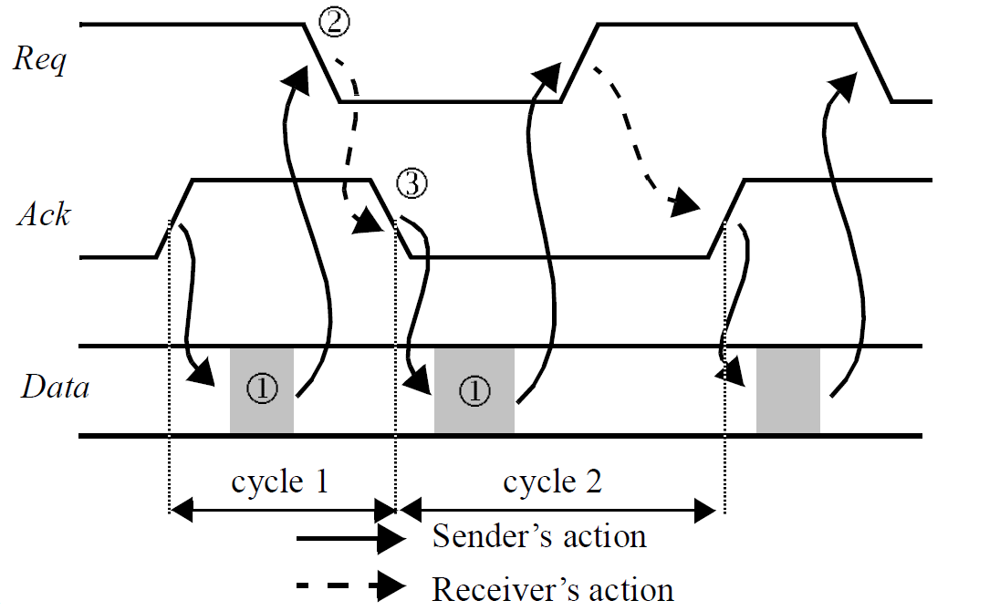
An essential component of any handshake protocol is the Muller C-element [16]. In his Turing Award lecture in 1989, Sutherland describes the Muller C-element as an AND element for “events” [13]. In the standard C-element, if both the inputs are the same, they are copied to the output. If one of the two inputs is different, the output retains the previous state. Figure 48 shows the other combinations that can be implemented using inverters.
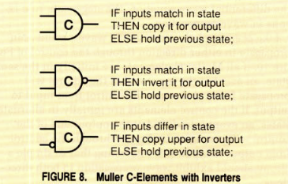
How does this relate to “events”? Let’s take the example of the standard C-element (no inversions). Say initially both the inputs are zero, so the output is zero too. When one of the input changes state, we hold the output - this could be the Req signal generating an event. We cannot send the data until the receiver generates an event on the Ack line. When an event is generated on the Ack line, both the inputs match and the output copies them. The truth table is shown in table 3. Since it looks very similar to an SR-latch, one of the ways to implement it is using an SR-latch as shown in figure 48. Unlike the SR-latch, there is no forbidden state and there is no differentiation between set and reset - both are treated the same.
| \(A\) | \(B\) | \(F_{n+1}\) |
| 0 | 0 | 0 |
| 0 | 1 | \(F_{n}\) |
| 1 | 0 | \(F_{n}\) |
| 1 | 1 | 1 |
Note that since the tranisition direction is important for what flavor of Muller C-element we want to pick from figure 48. This also means that the initial states should be assigned appropriately otherwise the ckt enters deadlock and we are permanently blocked from doing anything [11]. This is one of the drawbacks of the two-phase signaling scheme.
An alternative approach is to use a four-phase signaling or a return-to-zero (RTZ) scheme. This class of signaling requires that all controlling signals be brought back to their initial values before the next cycle can be initiated. This is illustrated in figure 49.
The first two phases are similar to the two-phase scheme in figure 47. However, once the Ack line is asserted, the sender cannot send the data until both Ack and Req lines are brought back to their original states. This is the primary difference between the two protocols. The main advantage here is that the directionality of the event (high-to-low or low-to-high) doesn’t need to be handled by the logic block or the C-element. In the two-phase case, this was necessary and necessiated the user to set the right initial states to avoid deadlock. In the RTZ protocol, since we always return to the initial state, we don’t worry about the directionality of the event. In fact, we just care about the high or low levels and not the events themselves - which makes it similar to how static CMOS is implemented. The drawback is that the RTZ scheme is slower.
Here are some examples listed in [11]
Say you have an asynchronous system, like a keyboard, that is sending data at no fixed phase relation w.r.t. the clk of a synchronous system, like a laptop. The laptop can continuously poll the keyboard at a given frequency to capture the data the keyboard is sending but depending on this polling rate, the clk frequency, and rise/fall times of the signal, the data sent by the keyboard could end up in the forbidden state - between \(V_{IH}\) and \(V_{IL}\). We cannot reliably decipher if the keyboard sent a 1 or a 0. An asynchronous signal must be resolved to be either high or low before sending it to a synchronous system. It doesn’t matter which, even if the keyboard sent a 1 but we decided it was a zero, it is okay as long as the keyboard is polled again and the decision we make for is consistent when the signal is in in the forbidden state. This decision is made by the synchronizer.
It’s been shown that a perfect synchronizer that always delivers a legal answer is impossible [11]. We can reduce the synchronization failures by waiting for longer before polling the signal from the asynchronous system. The higher the sampling rate on the synchronous side, the higher the chance that we might sample metastable voltages or forbidden states. We call these synchronization errors. The number of errors per second as a function of the wait time can be estimated by eqn 34
\begin {equation} \label {eqn:sync_error_rate} N_{sync}(T) = \frac {(V_{IH}-V_{IL})\exp (-T/\tau )}{V_{swing}}\frac {t_r}{T_{sig}T_\phi } \end {equation}
where \(T\) is the wait time, \(V_{swing}\) is the rail-to-rail output value, \(\tau \) is a time constant that is dependent on the strength of the transistors and their parasitc capacitances, \(T_{sig}\) is the period of the asynchronous signal, and \(T_\phi \) is the sampling period or the synchronous system’s clk. It is clear from eqn 34 that increasing the wait time, \(T\), exponentially decreases the number of synchronization errors. Therefore, waiting for longer before sampling the asynchronous data can help decrease the error rate. Instead of decreasing the clk frequency, this is achieved by adding delay by cascading multiple synchronizers. This way the total wait time before the asynchronous signal is sampled is the sum of the delays through all the synchronizers.
The solution space of the cross-coupled inverters has to obey A=B (loop gain). There is a metastable state apart from 0 and 1 that satisfies this condition as seen in figure 97. The metastable state falls in an invalid logic level. If the input changes during the aperture time (setup+hold time), the output remains at the metastable state before falling to either a 0 or 1 after a certain time. This time is driven by the RC time constant of the inverters and the loop gain at the metastable point (the xtors are in saturation here). [15] shows that the wait time for the metastable state to drop to one of the two logic levels increases exponentially with this decreasing loop gain. The feedback latch should have high GBW to resolve metastability quickly.
A simple synchronizer is shown in figure 50. The idea is that if the data arrives during the aperture period (say with a setup time violation) at F1, despite the intermediate node X being metastable, we can guarantee to a certain extent that the metastability will resolve before the setup time of F2. There will still be some synchronization errors since we cannot guarantee that metastability will resolve within the next clk cycle always.
[15] lists a few common pitfalls -
An arbiter is an element that decides which of the two events has occured first. A synchronizer is an arbiter with one of its inputs tied to the clk of the synchronous system. A mutual-exclusion circuit is an example where two request signals are taken as input and depending on which arrived first, the corresponding acknowledge signal is asserted high.
In figure 51, depending on which request arrives first, the cross-coupled NAND gates (similar to an SR-latch) assert one of the two nodes A or B. Since A and B nodes are the rails for the inverters driving the outputs, when one of them is asserted, the other inverter is shut down and the PMOS is always asserted to pull the corresponding acknowledge signal high. In the special case where both the request signals go high at the same time and the nodes A and B are metastable, the cross-coupled structure makes sure that the output is low until the metastability evolves such that the nodes A/B are a threshold voltage apart. This is shown in the timing diagram in the same figure. The 4-xtor structure that follows the cross-coupled SR-latch in figure 51 is also known as a metastability filter [15]. The output is never metasable but can take an arbitrarily long time - therefore, a synchronizer is needed before feeding the output of the arbiter to a synchronous system.
Note that since the request is not synchronized with F2’s clk, we need a synchronizer as shown in figure 50 on the request’s input at F2. Similarly, the acknowledge input at F1 needs a synchronizer. This is shown in figure 52.
Here is a link to Prof. John Wawrzynek’s offering of the class - SP23. Here’s his lecture on retiming - link. The idea of retiming is to see if we can reduce the critical path between two registers without changing the functionality of the ckt. By functionality, we mean that all the data outputs that were coming synchronously before (at a given clk edge) should come out at the same clk edge. The number of clk cycles overall can increase (usually doesn’t decrease because we’re adding registers) but at a given cross-section the wavefront of data needs to be the same as before (the data at each wire has to arrive synchronously).
Let us take an example of figure 53. The top ckt has a critical path of 5 from the middle register to the output register. If we move the middle register (we cannot move the output one cos the output needs to be stored in a register), because there are are two fanout paths for the combinational logic, we need to insert 2 registers so that the functionality of the ckt doesn’t change. This way, we’ve added 2 registers but haven’t changed teh latency of the ckt but decreases the critical path by 20%. One interesting thing is that, we can get rid of one register by moving it through the combinational block and then sizing the register to drive the fanout of 2 output paths. This alternate solution is also shown in figure 53.
Another example of retiming involves a loop. We move through the logic gates and introduce registers at the inputs of each gate as we move it from output to input. The NOR gate that sees the output of the feedback loop has a register in the loop too. How to deal with this? If the register in the loop and the at input of the OR gate have the same initial conditions, then essentially both have the same data at their D inputs at all times. We can combine them into a single register and move the feedback to the Q node. This is illustrated in figure 54. Once we move it to the output of the NAND gate, we can push it back further, giving two registers at its input. One of them essentially pops back into the feedback and the other one shows up at the output of the XOR gate. This is the best we can do in terms of optimizing critical paths.

Before we dive into PLLs, let’s look at a few other sequential circuits.
A monostable ckt generates a pulse of predetermined width every time it gets triggered by a transtion event. It is called monostable because the OFF state is the stable one. The trigger causes the ckt to temporarily go into a quasi-stable state before returning to its stable state after a fixed delay.
A common implementation of a monostable ckt is shown in figure 55. A XOR gate outputs low as long as the inputs are identical. An external trigger passes a copy of itself through a delay block and the output is high as long as the delay \(t_d\) introduced by the delay block - even if the trigger continues to be high after \(t_d\), the output switches back to low. The delay can be made tunable with an RC network.
An astable ckt has no stable state and oscillates back and forth between two quasi-stable state with a set frequency.
A ring oscillator is a circular chain of odd-numbered inverters. If the propagation delay through each inverter is \(t_p\) and there are N inverters, the total period of the oscillations is \(2\times t_p \times N\). How do we control the frequency of a ring oscillator? We can add tunable capacitors at the outputs of the inverters but that occupies a large area.
Figure 56 shows a modification to the inverter used in the ring oscillator to make it a voltage-controlled oscillator (VCO). The NMOS M3 can control the high-to-low transition by setting the max discharge current (similar to slew rate) and therefore, lets us control the frequency of oscillation. To control the rise time, we can add a series PMOS transistor to M2.
We can use a differential amplifier in positive feedback to create an oscillator that can run with even number of stages (each stage provides 90-degree phase shift). The frequency can be controlled by the tail current source. The differential VCO has better common-mode noise rejection (like supply noise).

PLLs are used to generate frequencies of clk as a multiple of an incoming clk. They are also used to synchronize clks between two chips if they share a single reference clk. A PLL can be represented with a block diagram shown in figure 58. A reference clk is generated off-chip (say a crystal oscillator), and is compared to the output of a VCO - which is the local clk we send to the system. The comparison is done by a phase detector which compares if the local clk is leading or lagging w.r.t the reference signal. A charge pump then generates an appropriate control signal to tune the frequency of the VCO. The output control voltage of the charge pump can be jittery and is therefore, smoothed out by a loop filter (which is a low-pass filter) before feeding it to the VCO. This reduces clock jitter.
Lock range defines the range of input frequencies the PLL can maintain its functionality while lock time specifies the time it takes for the PLL to lock onto a given signal input.
A VCO can be characterized as a ckt that produced a frequency that is a linear function of the control voltage.
\[\omega = \omega _0 + K_{VCO}V_{ctrl}\]
where \(K_{VCO}\) is the gain of the VCO (Hz/V) and \(\omega _0\) is a fixed frequency offset. Phase is just given by the time integral of frequency - \[\Phi _{out} = \omega _0t + K_{VCO}\int _{-\inf }^{t}V_{ctrl}dt\]
and the output signal is a sinusoid with \(\omega _0\) as the frequency and \(\Phi _{out}\) as the phase.
A XOR gate is the simplest phase detector. Figure 59 shows how the output of the XOR phase detector is linear with phase difference between the input and output signal for both lead and lag cases. One disadvantage with this detecor is that if the local clk at the input is a multiple of the reference clk, the output sent to charge pump is not different for any multiple, leading to false locked states (we might want it to lock to another frequency/multiple).
A phase-frequency detector (PFD) solves the above issue so that the PLL doesn’t lock to an incorrect multiple of the reference frequency. It is a state machine with 3 states - UP is high or low, DN is high or low, or the PLL is locked (both UP/DN are low).
Say when A is rising, UP takes on D (which is tied to \(V_{DD}\)) at the rising edge. It remains high till there is a low-to-high transition on B at which point DN is high momentarily. With both UP and DN high, the RST signal is pulled high through the AND gate with a delay of the clk-q delay of the B register and the propagation delay of the AND gate, and both flip-flops are reset. The time for which UP is high is proportional to the phase difference. This ckt can also act as a frequency error detector. When the frequency of A is higher than B, the average UP signal is proportional to the frequency error while the average DN signal is close to zero.
A simple charge pump is shown in figure 61. The capacitor is charged and discharged depending on the widths of the UP/DN signals. These changes in the control voltage are fed to the VCO through the loop filter.
In the block diagram of a PLL in figure 58, if we replace the VCO with a voltage-controlled delay line (VCDL), we get a Delay Locked Loop (DLL). Figure 62 shows the schematic of a DLL.
The VCDL is a block whose delay can be controlled, for example, a current-starved inverter. The idea is to delay the output clock till it matches up with the reference [11]. The phase detector in this case compares the delay between the output and reference and generates the UP/DN signal to the charge pump - there is no need for a frequency error signal.
Latches and registers are static sequencing elements - they orchestrate the flow of data in a pipeline. What are the common sequencing methods?
In figure 63, we see that registers pass the data at the cycle boundary. We will later see that a register is just a cascade of two latches. The two flip-flops can be replaced by three latches (instead of 4) as shown in the latch-based pipeline. Finally, we can eliminate the clk and use a pulse-triggered system in our pipeline - this only uses two latches instead of three. If the pulse is shorter than the delay introduced by the combinational block (which it usually is), then only one token passes through the pipeline per cycle similar to the other two sequencing methods [15].
How are latches and registers (flip-flops) built? We need to incorporate some kind of memory into the system. The simplest case of memory is achieved using the bistability principle - we have a ckt that has two stable states 0 and 1. A simple example is two cascaded inverters. Here the data is stored till an external trigger disturbs the equilibrium and moves it to the complementary state. Extra circuitry is needed to enable control of memory states in figure 64 [11].

The Set-Reset latch implements memory by implementing the following truth table
In figure 65, the state where S and R are both 1 is forbidden by additional circuitry. When implemented with NAND2 gates, the truth table changes slightly - \(S=R=0\) becomes the forbidden state for the latch. To introduce clk into such a set-reset topology, we can take the take the cross-coupled inverter pair in figure 64 and modify it as shown below.
Note that in figure 66, there are two paths to GND on each side - one through the regular cross-coupled inverter pair - say M2 and M1, and another through the ratioed inverter pair - say M2, and M6 and M5. In order to facilitate switching (and introduce positive feedback in the cross-coupled inverters), we need \(Q\) and \(\bar {Q}\) to swing below the switching threshold of the opposite branch. Example 7.1 in [11] works out a problem on how to size these transistors to enable proper switching.
One key issue with the SR-latch based flip-flop is that in figure 66, the sizing of the devices (especially M5, M6 and their counterparts) is critical for functionality - not just perfomance. MUX-based latches remove this criticality. Figure 67 shows implementation of a MUX-based latch where the MUX is implemented using transmission gates.
In figure 67, when CLK is high, the latch is transparent and D is copied to Q. The feeback loop from Q back to the other input of the MUX is open. When the CLK is low, the output inverter drives the feedback loop and latches the output similar to the cascaded inverters in figure 64.
We can use two of the MUX-based latches from above and build an edge-triggered register.
When the CLK is low, the leader stage is transparent and the input D is passed to the input of the follower stage. During this period, the follower latch is in hold mode and keeps the previous data value using feedback. On the rising edge of the clk, the leader latch stops sampling the input, and the follower starts sampling the output of the leader latch. Due to the clk-q delay of the first latch, the follower latch is able to sample the previous data and latch it in at the rising edge of the clk without “seeing” the refreshed (or invalid) value when the leader latch stops sampling its input.
One implementation of figure 68 is shown in figure 69. Note that I2 and I4 are made weaker by picking larger channel length devices (usually all other devices are min length). Where do setup, hold, and propagation delays come from in this ckt?
When clk is low and the leader latch is transparent, D passes through T1, I1 and I2. Why I2? In a bistable system such as figure 64, there are only 2 stable points (ignoring the metastable point). To move from one stable point to another, we need a trigger pulse that at least as wide as the \(2\tau _{inv}\) [11]. Otherwise, the nodes might not settle (since loop gain may fall below 1) to the new intended state (they might fall back to the previous stable state). Therefore, setup time comes from \(\tau _{T1} + 2\tau _{inv}\). Note that \(\tau _{T1}\) itself cannot be calculated using logical effort - the input D needs to be driven by some other gate and then we can compute the delay through that gate and the transmission gate T1.
When clk is high, the leader latch is opaque to changes in D and the follower latch samples the output of I1 and I2 loop. The clk-q delay comes from the delays through transmission gate T2 and the inverter pair of I3 and I4 ([11] says for propagation delay you only need to take I3 here, but why?). The clk-q delay is same as the setup time in this case. The hold time for this ckt is 0 since any changes in D are blocked once the clk is high at the transmission gate T1.
We assumed so far that clk and \(\bar {clk}\) are non-overlapping. This ensures that the leader and follower latches are on one at a time and never simultaneously. However, if in figure 69 clk and \(\bar {clk}\) have some overlap, D can be sampled even after the rising edge (when the clk has settled) and sent to Q. This is called feedthrough [8]. Luckily, in this transmission gate architecture, either only the PMOS or NMOS devices are on together at a given clk overlap and never both. Therefore, the effective resistance of the transmission gates is higher than when both the N and PMOS devices are on.
How to generate two-phase non-overlapping clk? We add a guardband by giving a \(t_{non-overlap}\) between each clk phase. A simple design is to the use the SR-latch from figure 65 and feed it clk and \(\bar {clk}\). Figure 70 shows this implementation.
In the topology shown in figure 70, we exploit the fact that for a NOR2 gate, when either of the inputs is 1, the output becomes zero. Since \(\phi _1\) and \(\phi _2\) are inputs to the opposite NOR2 gates, when one of them is high, the other one is guaranteed to be low due to the property explained above. We can control the \(t_{non-overlap}\) by sizing the NOR2 gates [6].
Instead of using a x-coupled pair of inverters for the memory element, we can use a capacitor to store the state. This is suceptible to leakage and needs periodic refresh if the memory is held for longer. In figure 71, we see that the input is sampled onto \(C_1\) which is the sum of the parasitc capacitances of the transmission gate and the input capacitance of the inverter. The setup time is simply the delay through the xmission gate. The hold time is zero since the xmission gate is off on the clk edge.
In the second phase, the inverters drive the sampled voltage to the output \(Q\). The clk-Q delay is the delay through the two inverters \(I_{1/2}\) and the xmission gate \(T_2\). This topology is prone to race condtions too since a clk overlap can cause a direct path from \(D\) to \(Q\). One way to deal with race conditions is to enforce a hold time constraint so that the input is constant even after the clk edge falls (\(\bar {CLK}\) could still be high!).
Unlike static logic which uses a bistable element to store the value of a 0 or 1, dynamic logic uses the charge on a capacitor to determine a 0 or 1. Since the capacitor can leak, the value stored might need a periodic refresh (hence the name dynamic). The Clocked CMOS register (C2MOS) is one such leader-follower register which is insensitive to clk overlap.
When CLK is 0, M4 and M3 are on while M7 and M8 are off. So Q holds whaterver value was stored previously. M2 and M1 act as an inverter stage now and X takes the opposite value of D. When CLK is 1, the leader stage turns off and X is now sampled and Q is the negation of X.
Let us look at what happens when clk and \(\bar {clk}\) overlap in a C2MOS register. In figure 73, for a 0-0 overlap, the PMOS devices M2 and M4 let X sample the changes in D even after the positive edge of the clk. This is undesirable. Luckily, since M7 is off, Q is unaffected by changes in X and clk overlap is not a problem. The same thing happens for a 1-1 overlap but with the complementary devices.
Therefore, it can be stated that the C2MOS latch is insensitive to clock overlaps because those overlaps activate either the pull-up or the pull-down networks of the latches, but never both of them simultaneously.
Note that, if the rise and fall times of the clock are sufficiently slow, there exists a time slot where both the NMOS and PMOS transistors are conducting. This creates a path between input and output that can destroy the state of the circuit [11]. X node can be floating - so we might need a keeper ckt to store the value at this node at all times.
What is the logical effort of D in a C2MOS register as shown in figure 72? Since we have stacked transistors - M1 and M3, and M2 and M4, and assuming no velocity saturation, we can size the devices as shown in figure 74. The corresponding reference inverter has a PMOS of width 2 units and an NMOS of width 1 unit. Therefore, the logical effort from D to X is \((4+2)/(2+1) = 2\). Similarly, the logical effort from X to Q is also 2. Since each stage is only active at opposite clk phases, the total logical effort of a C2MOS block is just 2 (there is no need to multiply individual stage’s logical effort).
What is the setup, hold, and clk-q delays of the C2MOS register in figure 72? When clk is 0 and the leader latch is on, the delay from D to X is just the delay of the inverter formed by M2 and M1. From our previous logical effort calculations, we know that this takes \(2\tau _{inv}\) (if \(\tau _{inv}\) is the delay of the reference static CMOS inverter). This is the setup time. The clk-q delay comes from the second stage - the time it takes for X to get to Q. Since the logical effort of D and clk are same in the case of C2MOS (at least for the sizing given in figure 74), clk-q delay is \(2\tau _{inv}\) as well. Finally, for the hold time is zero since the devices M3 and M4 are off when the CLK is high. Note that in practice a hold time constraint is enforced in case there is a clk overlap. When there is a clk overlap in the 1-1 state, as seen in figure 73, the node X can still undergo a 1-to-0 transtion. This cannot instantly transfer to the output, but as soon as the clk overlap period is done and the PMOS M8 is now on, the new sampled 0 on the X (which is sampled after the fall of clk edge) is transferred to the output. So, it makes sense to enforce a hold time condition equal to the clk overlap so that D is stable even after the clk edge.
Instead of passing the data to the output only at one edge, we can keep the same throughput by passing the data at both the edges of the clk and reducing the clk frequency by half. This can result in power savings in the clk distribution network [11]. Here two parallel C2MOS registers are used - M1 and M4 are reused to sample \(D\) in both phases of the clk while the leader stage and the follower stage operate in a complementary fashion.
While C2MOS is tolerant to clk overlap, it is not single phased and the rise and fall times of the clk can affect its operation. Figure 76 shows a style of latch that is truly single phase.
In the case of the positive latch in figure 76, when clk is high, the latch is just two cascaded inverters. When the clk is low, the pull-down network is disabled. Since there are two inverter stages, even if the pull-up network of the first stage is active, the second stage’s PMOS gate is pulled to high, switching it off. The opposite happens for the negative latch. We can embed any logic into the PUN and PDN as shown in the same figure.
We can make a TSPCR register using the positive and negative latch building blocks. Figure 77 shows the implementation - a negative latch followed by a positive latch to capture the data at the positive edge, followed by another inverter to drive the output stage.
In figure 77, when clk is low, X samples the changes in D (its negation to be more precise). The second inverter charges up Y to \(V_{DD}\). This leaves the third inverter in hold mode since M9 and M8 are off. On the rising edge of the clk, the dynamic inverter in the second stage evaluates X - if X is high, Y discharges, otherwise Y stays charged to \(V_{DD}\). The third inverter is also on during this time and Y is passed to the output Q.
What is the setup, hold, and clk-q delays of the TSPCR register in figure 77? The setup time is straightforward - it is from the delay of the first dynamic inverter (the time taken from D to X) [11]. The propagation delay is from X to output Q - 2 dynamic and 1 static inverter delay. To understand the hold time, we need to consider what happens at the rising edge and when D is transitioning from low to high. The NMOS M1 needs a time of \(\tau _{inv}\) to discharge the node X. This forms the hold time for a “high” input at D. When D is zero, the hold time is zero since X cannot be pulled up after CLK is shuts down M2.
Similar to the C2MOS latch, the TSPC latch malfunctions when the slope of the clock is not sufficiently steep. Slow clocks cause both the NMOS and PMOS clocked transistors to be on simultaneously, resulting in undefined values of the states and race conditions.
All the registers we’ve seen so far use a leader-follower configuration. Pulse registers use a short pulse that is generated at the edge of the clk so that the latch is transparent for a very short time window. Race conditions can be avoided by making the transparent period very short. How do we generate the pulse? A simple pulse generator is shown in figure

On the left figuure in figure 79, we see that when CLK is low, X is high. When the clk is about to rise, there is a brief period when both the inputs of the AND gate are high. The AND gate outputs a high signal and the CLKG signal is high. This turns on the PD NMOS and X (and CLKG) to low. The length of the pulse is controlled by the delay through the AND gate and the two inverters [11]. There is also a delay between the clk edge and the glitch signal that is equal to the delay through the AND gate and the two inverters. The register used in the example in figure 79 is TSPCR positive latch.
If we measure the setup time from the rising edge of the glitch (as opposed to the clk), the setup time is essentially zero. The hold time is equal to the delay through the AND gate and the two invereters (which is equal to the length of the pulse). The clk-q delay is delay across two invereters in the TSPCR positive latch.
[11] notes that a negative setup time can be achieved if the delay from input to output is smaller than the transparency window.
This just means the data can arrive after the glitch’s rising edge since the latch is still transparent and can make it to the output since the delay is smaller than the glitch length.
We can combine the pulse generator and the latching module into a single block - know as the Partovi pulsed latch. The cross-coupled inverters at the output make sure the output state is retained.
Pulsed latches offer greater speed than conventional registers at the cost of increased hold time. Since there are fewer clked elements, the power consumption is reduced as well. However, pulsed latches are not suitable when there is no logic block between the pipeline stages. We need some some element that can introduce delay to essentially meet hold time constraints. One such block is the clocked deracer - which is just a clocked buffer that adds delay between two pipeline stages as shown in figure 81.
Yet another technique to build a register is using sense amplifers. In a digital design sense, they accept a small input signal and convert it to a rail-to-rail output. In figure 82, there is a cross-coupled inverter pair (M5-M8) whose outputs, L1 and L2, are precharged to \(V_{DD}\) during the low-phase of the clk using M9 and M10.

This means M7 and M8 are turned off and the xcoupled NAND2s hold the previous state. M1 is also turned off when clk is low so that any differential input cannot affect the stored state. When the clk is high, M1-M6 behave as a differential amplifer and the difference between the inputs is amplified at the output nodes L1 and L2. The cross-coupled invereter stage flips accordingly.Why do we need M4 here?
Referring to figure 83, say the inputs at M2 and M3 were initially 1 and 0. If the inputs change after the positive edge of the clk, as shown in the same figure, and if M4 was absent, M2 would turn off and this would let the inverter pair at the top to charge the drain node at L3 (leakage currents) and flip the state of the NAND FFs. M4 provides a shorting path for the leakage so that when the inputs change, there is path for the leakage current to not affect the high-impedance node.
Most practical sequencing elements require a reset signal to enter a known initial state on startup and ensure deterministic behavior. A synchronous reset waits for the clk to reset the state while an asynchronous reset immediately resets the current state.
The tristate NAND gate in the asynchronous reset case in figure 84 can be constructed with a NAND gate in series with a clocked transmission gate [15].
When enable en is low, the element retains its state independently of the clock. In figure 85, we see this can be achieved either using a MUX or a clock gating scheme. The MUX-based scheme adds area and delay while the clk gating scheme does not add any delay from input to output and saves power because the clk’s activity factor is 0 when disabled. The AND gata can introduce clk skew, however.
While a dual edge-triggered (DET) register can double throughput, it is sensitive to duty cycle - which becomes a clk skew. A simple way to a DET register is to use a rising and falling edge registers in parallel as shown in figure 86.
Another way is to generate pulses at the rising and falling clk edges and then use a pulsed latch.
A Schmitt trigger has the following properties [15]
Figure 88 illustrates a conceptual block diagram of a Schmitt trigger. When the voltage is rising but below \(V_{M+}\), the trigger outputs a zero. As the input rises above the positive threshold, the trigger quickly turns on and outputs a 1. If the signal starts falling, there is no change till the falling signal falls below the negative threshold, \(V_{M-}\), which could be different from \(V_{M+}\), and the output is now a zero.
This inherent hysteresis between the rising and falling thresholds is a fundamental characteristic of a Schmitt trigger. A CMOS implementation is shown in figure 89.
Let’s say the input is initial zero in figure 89. The node X is pulled to high and the inverter at the output makes the output 0. This turns on M4 and shuts off M3. This changes the switching threshold of the first inverter to \(k_{M1}/(k_{M2}+k_{m4})\) - which makes it harder to switch states by increasing the \(V_{in}\) that is needed on M1 to overpower the two PMOS transistors. Once the switch does happen at node X, the feedback loop of the inverter causes the transistor M4 to shut off and turns on M3. Now for a falling input, M2 has to overcome the pull-down of the two NMOS devices M1 and M3 and the switching threshold is different from the rising one due to different ratios. This is the cause of the hysteresis in a Schmitt trigger.
Figure 90 shows an inverting Schmitt trigger. When the input is 0, M3 and M4 are on and act pull the output to 1. This turns off M6 but M5 is on and pulls the node X to \(V_{DD}-V_{th,n}\). As the input increases, M1 starts turning on sinking more current along M1 and M5 path. The voltage at node X keeps falling and this increases the overdrive on M2 as its gate voltage is increasing while the source voltage is dropping. At some point, \(V_{in} > V_x + V_{th,n}\) and the device M2 turns on, sharply pulling down the output node to GND. This turns off M3 and and turns on M6. The node between M5 and M6 is \(V_{th,p}\). Further increasing \(V_{in}\) doesn’t change the output. The same mechanism is applied in reverse for a falling input and the hysteresis comes from the difference in threshold voltages of M5 and M6 along with the pull-up and pull-down networks [5].
In a system with sequential and combinational blocks, the delay through a large combinational block can often be a bottleneck to higher clk speeds. Say you have a combinational block made of \(n\) blocks, each of the same delay. Say there is a register at its input and its output. The total delay is given by the sum of the setup, hold, clk-q times, and the delay through the \(n\) combinational blocks. In pipelining, we increase the throughput by adding registers between the \(n\) combinational blocks, so that the delay between two consecutive registers is now decrease \(n\) fold (assuming register related delays are much smaller)! We can also load the next instructions as the first instruction makes it way through the pipeline. The result is that we can run at a higher clk speed, and despite the result now taking \(n\) clk cycles, the functional throughput increases since we are also loading the next instructions.
No-race pipelining can be implemented with some additional constraints on C2MOS latches. In a C2MOS latch, the internal node is affected by the input when there is clk overlap, but this effect does not transfer to the output stage. However, if there is an inversion in sign due to the logic implemented in the pipeline, the inversion can cause the other half of the output stage (which is NOT disconneted) to respond and change the output stage.
In figure 91, without the inverter, the output stage would still have the PMOS half connected to the output - but this is not affected by any change in the input. However, with the sign inversion that is introduced by the inverter, the output PMOS pull up can respond to changes in the input after the clk edge. We elminate this issue by imposing a constraint that the combinational block implemented in any pipeline stage (between a pair of C2MOS latches) are all non-inverting.
We can extend this idea in developing a NORA-CMOS logic, where we use dynamic logic based combinational block and C2MOS latches. The logic and latch are both clocked such that they’re simultaneously in either evaluation or hold (precharge) mode [11].
From figure 92, we define a clk module when the block is in evaluation phase when clk is high and its complement when clk is low. A NORA data path consists of alternating clk and \(\bar {clk}\) modules.
Static RAMs use a memory cell with internal feedback that retains its value as long as power is applied [15]. It has the following properties
Hence, SRAM is used for register banks. A SRAM cell needs to be able to read and write data and to hold the data as long as the power is applied.
A standard 6T-SRAM cell (from now on we’ll just refer to this as SRAM cell) is shown figure 93. It consists of a weak cross-coupled inverter pair holding the memory similar to figure 64.
Let us assume that Q stores a 0 initially in the SRAM cell. A READ operation starts with charging the bit and \(\bar {bit}\) both to high. The word line is then assserted. Let us now see what all devices are on. D2 and P1 are OFF while A1, A2, D1, and P2 are ON. Since \(Q_b\) and \(\bar {bit}\) are both at 1, there is no discharge on that side of the cell. On the opposite side, A1 is trying to pull bit to high - but if it succeeds, the state of the cell flips and we have a destructive READ operation. To prevent this, D1 is sized larger (stronger drive, lower resistance) than A1. The momentary increase in the voltage at node Q is sensed by a differential sense amplifier at the end of the bit line column.
A WRITE operation starts with charging the bit and \(\bar {bit}\) to the desired values, and then asserting the word line. Assume Q is initially 0 and we wish to write a 1 through bit. bit is precharged to high (and \(\bar {bit}\) to low) and word line is asserted. In the current setup, A1, A2, D1, and P2 are ON, and P1 and D2 are OFF. D1 is actively pulling Q to GND. From a READ perspective, we designed D1 to be stronger than A1. Therefore, the WRITE operation has to start at the \(Q_b\) side [15].
Nominally, WRITE operation always starts at the column line (bit or \(\bar {bit})\) which holds zero. This is true for writing either 0 or 1 to the SRAM cell.
From \(Q_b\) side, A2 needs to overpower P2 so that a zero can be written into this node. Therefore, A2 is sized bigger than the pull-up device P2.
In a WRITE-optimized SRAM, however, we size both the pull-up and pull-down transistors smaller than the access transistors. This comes at the cost of read stability, however. There is a conflict between an SRAM cell optimized for READ vs WRITE.
Nominally, for good READ stability and WRITABILITY, sizing of the transistors is PD \(>\) AC \(>\) PU.
The switching threshold of an inverter is defined as the point where \(V_{in} = V_{out}\) [11]. Figure 95 shows the VTC of a static CMOS inverter. At the switching threshold, \(V_M\), both the NMOS and PMOS are in saturation.
If \(V_{DD} >> V_{th,n/p}\) then we can approximate the threshold voltage for a velocity saturated devices as follows [11]
\begin {equation} \label {eqn:vm_vel_sat} V_M = \frac {rV_{DD}}{1+r} \end {equation}
where \(r = (v_{sat,p}W_P/v_{sat,n}W_N)\) for the given inverter. In long channel devices without velocity saturation, eqn 35 changes to
\begin {equation} \label {eqn:vm_long_channel} V_M = \frac {V_{th,n}+r(V_{DD}+V_{th,p})}{1+r} \end {equation}
where \(r = \sqrt {-k_p/k_n}\). [11] notes that \(V_M\) is relatively insensitive to \(W_P/W_N\) in an inverter (he does through an example simulation). Increasing the width of PMOS moves \(V_M\) towards \(V_{DD}\) while increasing the NMOS moves it towards GND. If the input has a noisy 0 value, an asymmetric inverter with \(V_M\) shifted towards \(V_{DD}\) would be more robust in preventing erroneous values to pass through.
Quick notes on scaling effects on \(V_M\) -
In the transition region (where both N and PMOS are in saturation), we ideally want an infinite gain. As supply voltage decreases, we see that this gain actually increases in the transition region. However, as the supply falls below the threshold voltage of the devices, they start to deviate significantly from the VTC of an inverter behavior. At around \(V_{DD,min} \approx 2-4 \frac {kT}{q}\), the device no longer behaves like an ideal inverter. This behavior is summarized in figure 96.
When the access transistors are OFF (word line is low), the cross-coupled inverters hold the state in the memory cell. However, noise can disturb the cell and switch the state. The maximum noise allowed at the input of the cross-coupled pair before it switches states is called static noise margin.
For a READ operation, since both the bitlines are precharged to \(V_{DD}\), the VTC curves are different from the regular inverter VTC. Assume we’re analyzing only side at a time (i.e., don’t take that both BL and \(\bar {BL}\) are precharged and then you’re sweeping V1, just take V1 without the access transistor and precharged BL). Then V2 starts off the same but goes only as low as the resistor divider between the access and pull down transistors allows. Similarly, for the other curve. As seen in figure 97, this decreases the size of the maximum square that can be drawn in the butterfly curve - the read noise margin is lower than the static noise margin. In fact, the read noise margin depends on how low the resistor divider between the access and pull down transistors lets you pull to GND. We can do the following to improve this
For the WRITE margin, we do a similar simulation as the read stability, except one of the bitlines is pulling to GND. Let’s say the the side of V2 is still pulling to a logic 1, then the VTC curve of V2 when V1 is swept is the same as before. However, now when we sweep V2 and try to measure V1, the access transistor is trying to pull that node to GND while the pull up transistor is trying to pull up to \(V_{DD}\). The resistor divider between the pull up and the access transistor sets this voltage somewhere between GND and \(V_{DD}\). Ideally, we would want the access transistor to pull this node to GND as soon as possible - even V2 is close to 0 if possible! As V2 increases, it shuts down the pull up PMOS and pulling down is easier since both the access transistor and the pull down transistor are trying to send V1 to zero. The smallest square - unlike in READ/HOLD where it was the largest square - defines the write static margin as shown in figure 97. This is just so that we have a pessimistic estimate of the write margin w.r.t to noise. WRITE margin can be improved by
Here are some techniques that help with READ operation
Here are some techniques that help with WRITE operation
We follow the analysis in [9] to create a negative supply voltage using switched cap ckts. Figure 98 shows the basics of charge redistribution which arises from charge conservation. In a simple voltage inverter, a clk phase charges C1 to \(V_{IN}\). In the next phase, C1 is connected to C1 but in reverse polarity.
Say the capacitor C2 is intially discharged, we can apply the charge conservation eqn as follows
\[ C_1(-V_{IN}) + 0 = (C_1 + C_2)V_{OUT} \] \[V_{OUT} = -V_{IN}\frac {C_1}{C_1+C_2}\]
The negative sign on the LHS comes from the fact that initially the GND reference was on the bottom plate, but during the second phase, the refernce is switched to the top plate, which makes \(V_1 = -V_{IN}\) in figure 98. After n such cycles we have the following output voltage
\begin {equation} \label {eqn:switch_cap_inv1} V_{OUT} = -V_{IN} \bigg ( \frac {C_1}{C_1+C_2} + \frac {C_1C_2}{(C_1+C_2)^2} + \cdots + \frac {C_1C_2^{n-1}}{(C_1+C_2)^n}\bigg ) \end {equation}
In eqn 37, if we tend the number of cycles to infinite, we get \(V_{OUT} \approx -V_{IN}\).
We can implement a voltage doubler using the ckt in figure 99. The first phase of the clk is similar to the one before whre C1 is charged to \(V_{IN}\). In the second phase, the capacitor C1 is now in series with C2. At steady state, this acts as a second battery with a voltage drop \(V_{IN}\) across it and therefore, \(V_{OUT} = 2V_{IN}\).
We can stack up n such capacitors to make a voltage multiplier [4]. We can also switch the input and output to make a voltage halver/divider.
These kind of switched cap ckts need a closed loop feedback to control the clk phases and duty cycles to regulate voltage at the output.
Say we have two power domains \(V_{DDL}\) and \(V_{DDH}\). When an inverter from the lower supply is connected to the higher supply, the second inverter is never fully OFF (especially the PMOS) as the driving lower \(V_{DD}\) inverter cannot reach the same logic high that is needed for \(V_{DDH}\). This is illustrated on the left in figure 101.
We need a level converter that can take the input from the first inverted and drive the second inverter. The ckt on the right in figure 101 does this. Say IN = 0, then the NMOS on the right is off and the NMOS on the left is weakly turned on, it pulls the gate of the PMOS on the right low, turning it on. The drain node of this PMOS goes high (\(V_{DDH}\)), turning off the PMOS on the left. The output inverter is now driven to \(V_{DDH}\) at its input and OUT = 0. Say IN = 1, then the NMOS on the left is off and the NMOS on the right starts pulling its drain to GND. This turns on the PMOS on the left and it pulls its drain to \(V_{DDH}\), effectively shutting off the PMOS on the right. The input to the output inverter is GND and OUT is \(V_{DDH}\). In both cases, we made use of the fact that the NMOS can pull to GND effectively (a bit weakly compared to \(V_{DDH}\)).
Note that in the other case when an inverter in \(V_{DDH}\) supply drives an inverter in \(V_{DDL}\) domain, the latter inverter can switch faster than when driven in its own domain. This speed up may cause hold time violations and need to be considered when doing timing calculations. Level converters cost delay and power. [12] does an analysis for the delay and power consumption of a level shifter as shown in figure 101. When there is a transition from \(V_{DDL}\) to 0 at the input, the corresponding node \(Q_2\) sees contention from N2 pulling the node down vs P2 pull the node up. N2 turns on in saturation while P2 in triode. N2 stays in saturation till \(V_{DS}\) across it drops below its overdrive and then enters triode. On the other hand, P2 was in triode and therefore, it reachers a peak current as \(V_{SD}\) increases across it, and then drops because \(Q_1\) (\(V_{SG}\)) is discharging. The maximum current from P2 is delivered when \(V_{SD} = 1/3\times V^*\), it’s overdrive voltage. We define the contention factor at node \(Q_2\) as
\begin {equation} \label {eqn:level_converter_contention} k = \frac {I_{P2,max}}{I_{N2,sat}} = \frac {1}{3} \frac {\beta _P}{\beta _N} \bigg (\frac {V_{DDH}-|V_{th,P}|}{V_{DDL}-V_{th,N}}\bigg ) \end {equation}
Note that as the difference between \(V_{DDH}\) and \(V_{DDL}\) increases, so does the contention factor in eqn 38. If we assume \(k\) is usually smaller than 1 (in a well-designed converter) and that \(V_{th,p}/V_{DDH}\) is also not greater than 0.25, then we can simplify the delay and power consumed as follows
\begin {equation} \label {eqn:level_converter_delay} t_d \approx \frac {C_L}{\beta _P(V_{DDH}-V_{th,P})} \times \ln \big (\frac {1}{1-k}\big ) \end {equation}
\begin {equation} \label {eqn:level_converter_powery} P \approx 2fC_L \times \bigg (1 + \ln \frac {1}{1-k} +\frac {V_{th,p}}{V_{DDH}} \bigg ) \end {equation}
As expected, increasing contention increases delay and power consumption - especially from short circuit current (term with \(k\) in it). When contention is close to zero, the power consumed is simply \(2fC_LV_{DDH}^2\) and the delay is almost zero.
How to give dead time in ckts?
How do process corners affect SRAM READ/WRITE operations and stability?
How does temperature affect them?
How does changing supply voltage affect them?
How does clk frequency (if at all) affects them?
Row circuitry has word line drivers and row decoders. Address is decoded in the decoders and then the corresponding wordline is driven. Let us take a simple case for a row decoder. We have 4 rows, meaning we have 2-bit row address. A simpled decoder made of inverters and NAND gates is shown in figure 103.
For larger addresses, the decoder becomes slower due to large fanout of the inverters. We can break the decoding into more stages and add a predecoding stage. For an n-bit address, from the above implementation, we’d need an N-input NAND gate where several NAND gates share utmost 3 inputs - say between two NAND4 gates, the first three inputs are A0, A1, A2, but the last input could be A3 and its complement split between the pair of them. This is a waste of area - we can reduce this redundancy by adding a predecoding stage which converts the addresses into blocks of 1-hot encoded codes that drives the smaller fan-in NAND gates. This idea is shown in figure 104. Predecoding doesn’t save much path effort but saves area due to implementation of smaller gates.
Placing a buffer between the decoder and word lines saves a large amount of dynamic power at a small cost of delay [15]. The critical path for a READ operation involves the decoder driving the wordline and the SRAM cell that pulls the bitline (or its complement) to create the small signal differential voltage. Figure 105 shows a \(2^n\)- word, \(2^m\)-bit memory with a total storage of \(2^{n+m}\) bits. Let us calculate the delay from the address line to the bitline. Assuming the unit inverter has a PMOS to NMOS ratio of 2:1 and the decoder is an n-input NAND gate, the logical effort from the address to wordline is (n+2)/3. Let us assume that the access transistor and the pull-down transistor are unit sized. They are in series when pulling down the bitline, therefore, the logical effort is 2. If we assume the wire capacitance per cell on the bitline is another unit sized transistor, the decoder NAND gate sees this wire and two gates - a total of 3C for each cell. This represents a fanout of 3/\(C_{in}\) for the address to wordline path, where \(C_{in}\) is the input capacitance of the n-input NAND gate (which depends on sizing). Note that for an individual stage’s fanout, we consider the on-path capacitance and then include the off-path efforts in the branching effort term.
But the branching effort is calculated just from the capacitance of driving one cell among all the other cells - \(2^m\). The parasitic capacitance is just the n-input NAND gate’s capacitance and is equal to n [15]. The total bitline capacitance is \(2^n C\) (1C from diffusion of access transistor and 1C from the wire/cell) while the drive of the pull down network formed by the access and pull-down transistors is 2R. Therefore, the total parastic delay is \(2^{n+1}RC/3RC = 2^{n+1}/3\). Assume that the load seen at the output of the bitline is \(C_L\), fanout for this stage is \(C_L/2\). Total delay is given by Finally, the branching effort of the SRAM cell is \(2^n\) since the other cells do not drive the bitline.
\begin {equation} \label {eqn:le_sram} \begin {split} F_1 &= LE_1FO_1B_1 = \frac {n+2}{3}\frac {3}{C_{in}}2^m = 2^m \frac {n+2}{C_{in}} \\ F_2 &= LE_2FO_2B_2 = 2\frac {C_L}{2}2^n = 2^nC_L\\ P &=P_1 + P_2 = n + \frac {2^{n+1}}{3} \\ D &= F_1F_2 + P = 2^{m+n}\frac {n+2}{3}\frac {C_L}{C_{in}} + n + \frac {2^{n+1}}{3} \end {split} \end {equation}
From eqn 41, we see that the total delay depends on the total size of the SRAM, \(2^{m+n}\), and the number of words \(n\).
The column circuitry consists of the bitline conditioning circuitry, the write driver, the bit line sensing circuitry, and the column multiplexers. A memory array is organized by \(m\) words \(\times \) \(n\) bits. A lot of parasitics and long wire delays can make the FO4 delay of a column driver unacceptably large.
For bitline conditioning (precharging), we can use a simple PMOS switch to pull both the lines up to \(V_{DD}\). Column multiplexers are similar to row decoders.
In a READ operation, we want to read small voltage swings between the bitlines withouth flipping the cell. We use a sense amplifier to achieve this. While the sense amplifier is doing its job, we can turn off the word line to prevent any further distrubance in the cell and improve read stability. There are several ways to implement a sense amplifier and each one performs better in one area vs the other - like dynamic power dissipation, speed, sensitivity, etc.
One particular class of sense amplifiers uses differential flip-flops. In figure 106, on the right, we see a sense-amplifer flip-flop which takes a differential input and returns a rail-to-rail differential output. When clk is low, the nodes \(X\) and \(\bar {X}\) are precharged. When the clk rises, one of the two nodes is pulled down by the input pair. The cross-coupled PMOS at the top acts as a keeper on the other node to hold its value (while it lets the other node disconnect from \(V_{DD})\). The output of the differential amplifier is latched by the follower SR-latch to drive Q and its complement. The equalizing transistor between the two branches makes sure that when the CLK is high, any changes in D and its complement are equalized. The delay through the cross-coupled SR latch can be a bottleneck.
The power dissipation of a CMOS circuit is instead dominated by the dynamic dissipation resulting from charging and discharging capacitances [11].
Let’s take the example of a capacitor charging by a PMOS from 0 to \(V_{DD}\) as shown in figure 107.
\begin {equation} \label {eqn:cap_charge} E_{charge} = \int _{0}^{\infty } i_{DS}(t)V_{DD} dt = V_{DD} \int _{0}^{\infty } C_L \frac {dv_{out}}{dt} dt = V_{DD} C_L \int _{0}^{V_{DD}} dv_{out} = C_LV^2_{DD} \end {equation}
Since charging happens with a constant voltage across the capacitor, we can pull out \(V_{DD}\) in eqn 42. It takes \(C_L V^2_{DD}\) energy to charge a capacitor. Let’s look at discharging the cap from \(V_{DD}\) to 0 V.
\begin {equation} \label {eqn:cap_discharge} E_{stored} = \int _{0}^{\infty } i_{DS}(t)v_{out} dt = C_L \int _{0}^{V_{DD}} v_{out}dv_{out} = C_LV^2_{DD}/2 \end {equation}
From eqn 43, we see that the total energy stored on the cap is just \(C_LV^2_{DD}/2\) - half of what it took to charge it to the same voltage. This shows the energy of \(C_LV^2_{DD}/2\) was disippated by the PMOS when charging the capacitor - and this is true irrespective of the size/resistance of the PMOS [11]. We therefore conclude that for each switching cycle (low to high plus high to low), a total energy of \(C_LV^2_{DD}\) is used from the power supply. The dynamic power consumption is therefore
where \(f\) is the clk frequency. We see that increasing clk frequency linearly increases power consumption.
Activity factor of a logic gate can be estimated by calculating the switching probability at its output, given some known probability of inputs switching. Glitches can increase the activity factor of a gate.
If \(P_i\) is the probability that node \(i\) is 1, then \(\bar {P_i} = 1-P_i\) is the probability of the node being at 0. Since the activity factor is the probability of a transiation from 0 to 1 (one cycle it’s 0 and the next cycle it’s 1, hence the multiplication of the probabilities), we can write
\[\alpha _i = P_i \bar {P_i}\]
Let us work out a couple of examples assuming each input node has a switching probability of 0.5 in figure 108.
As seen in figure 109, the key idea is to find the probability that each output node is at 1 in one cycle and 0 in the next, and since these are uncorrelated, the probability of switching is just the product of these two probabilities.
Let us work through an example for sizing that minimizes energy. In figure 110, the total delay can be given by
\begin {equation} \label {eqn:inv_chain_delay_emin} t_p = t_{p0}\bigg ( \bigg ( 1+ \frac {f}{\gamma } \bigg ) + \bigg ( 1 + \frac {F}{f\gamma }\bigg ) \bigg ) \end {equation}
where \(F = C_{ext}/C_{g1}\), the overall effective fanout of the ckt, \(t_{p0}\) is the intrinsic delay of min sized inverter.
The total energy consumption can be given by
\begin {equation} \label {eqn:inv_chain_emin} E = V^2_{DD} C_{g1}((1+\gamma )(1+f)+F) \end {equation}
From eqns 44 and 45, and the fact that the intrinsic delay \(t_{p0}\) is proportional to
\begin {equation} \label {eqn:tp_vdd} t_{p0} \propto \frac {V_{DD}}{V_{DD}-V^*} \end {equation}
where \(V^* = V_{T}-V_{DSsat}/2\), we can derive a relationship between \(V_{DD}\) and the fanout for the first inverter \(f\) given a minimum bound for performance. Say we want the delay across the two inverters in figure 110 to be no larger than delay with \(f=1\) at \(V_{DD} = V_{ref}\), then we have (for \(\gamma = 1\))
\begin {equation} \label {eqn:emin_delay_min} \frac {t_p}{t_{pref}} = \frac {t_{p0}\bigg (2+f+\frac {F}{f}\bigg )}{t_{p0ref} (3+F)} = \bigg (\frac {V_{DD}}{V_{ref}}\bigg ) \bigg (\frac {V_{ref}-V^*}{V_{DD}-V^*}\bigg ) \Bigg (\frac {2+f+\frac {F}{f}}{3+F}\Bigg ) = 1 \end {equation}
\begin {equation} \label {eqn:emin_min} \frac {E}{E_{pref}} = \bigg (\frac {V_{DD}}{V_{ref}}\bigg )^2 \bigg (\frac {2+2f+F}{4+F}\bigg ) \end {equation}
From figure 111, we see that for different values of effective Fanout \(F\), increasing the size of the inverter initially decreases the energy consumed. This happens till \(f = \sqrt {F}\) (two-stage optimal fanout per stage as seen in fig 16) and increasing the size of the second inverter deteriorates delay, which then needs to be compensated by increasing \(V_{DD}\), which in turn increases the energy consumption.
We note the following points [11]
Since CLK network has high activity factor and fanout, switching it off to blocks that are not being used saves a lot of power. We can use a clk enable signal to AND the clk signal - this is called CLk gating. The clk enable signal must be robust and not prone to glitches.
Before turning off the system, we’d like to store its state. Figure 113 shows a balloon ckt that uses a sample and hold ckt made of cross-coupled inverters. These inverters are made with min-sized, high-Vt or thick-oxide xtors to minimize lkg.
Since the rise and fall timnes are finite, there exits a window (of length \(t_{sc}\)) during the inverter operation where both the NMOS and PMOS devices are on - leading to a short ckt from \(V_{DD}\) to GND. If the peak short ckt current is \(I_{peak}\), we can approximate the average power consumption as
\begin {equation} \label {eqn:short_ckt_power} P_{sc} = t_{sc}V_{DD}I_{peak}f \end {equation}
where \(f\) is the clk frequency. The value of \(t_{sc}\) depends on the threshold voltages of the devices along with the slopes of the input waveforms. \(I_{peak}\) is a strong function of the input and output slopes. If the load cap at the output is too small, the output changes fast causing the \(V_{DS}\) across one of the devices to be equal to \(V_{DD}\) during the short time when both devices are on. This increases \(I_{peak}\) but \(t_{sc}\) is small for the same input slope.
Static consumption refers to the leakage current when the inverter is off. Increasing temperature increases leakage, hence, static dissipation.
We can first try minimizing energy (or power-delay product) by itself. Minimizing power is not interesting by iteself since it comes with huge delay penalties and consequently, increased losses through leakage (leakage energy is increased due to longer delays).
In figure 114 we see that for higher speeds, we need to increase the supply (to increase the drive current) but also have to decrease \(V_{th}\). This is especially true for the left plot because switching energy dominates while on the right plot, where the activity factor is low, the leakage power dominates. In this case, the threshold voltage needs to be increased to reduce the leakge losses. Increasing temperature also increases leakage so we need a higher threshold voltage.
One of the performance metrics that capatures the trade-off between performance and energy consumption is the energy-delay product
\begin {equation} \label {eqn:edp} \mathrm {EDP} = \frac {C_L V^2_{DD}}{2}t_p \end {equation}
If we assume the same behavior for \(t_p\) as eqn 46, we can derive a relationship for EDP with the supply voltage
\begin {equation} \label {eqn:edp_vdd} \mathrm {EDP} \propto \frac {C_L V^3_{DD}}{2(V_{DD}-V^*)} \end {equation}
Setting the derivative to 0 in eqn 51, we see that the optimal \(V_{DD,opt} = 1.5 V^*\) wherw \(V^* = V_{th} + V_{DSAT}/2\).
Note that in eqn 51, we considered leakage to be negligible. Hence, the eqn suggest decreasing \(V_{th}\) improves EDP. This is not true, however.
We can tradeoff some delay to make considerable energy savings. Let us work through an example to understand how we can do this given we know the activity factors at the inputs [15].
Figure 116 shows the 3 most common models used to model long wires. [15] states that the L-model is a poor choice because a large number of segments are required for accurate results (why?). The \(\pi \)-model gives better results and so does the T-model but its the latter is harder to solve by hand. Any inductance is modeled in series to the resistance.
At high frequencies, currents tend to flow primarily on the surface of the conductor with current density falling exponentially with depth into the conductor [11]. A very hand-wavy explanation states that this is due to the magnetic fields generated within the conductor cause eddy currents, which peak at the center of the conductor, and then cancel out the original AC (can read up more later). The skin depth, \(\delta \), is defined as the depth where the current falls off to \(1/e\) of its nominal value
\begin {equation} \label {eqn:skin_depth} \delta = \sqrt {\frac {\rho }{\pi f \mu }} \end {equation}
where \(\mu \) is the permeability of the surrounding dielectric (not the conductor). Note that skin effect is more predominant in wider wires (like the clk signal)
Instead of the lumped RC model, we can model the interconnect more accurately by discretizing the resistance and capacitance of the wire into infinitesimal chunks as shown in figure 117.
We can model the voltage any node \(i\), when \(\Delta L \rightarrow 0\), as
\begin {equation} \label {eqn:distributed_model_rc} rc \frac {\partial V}{ \partial t} = \frac {\partial ^2 V}{\partial t^2} \end {equation}
Luckily, we do not need to know the solution of the diffusion eqn above in eqn 53. We can model the effective resistance and capacitance by tweaking the lumped model as shown in table 7.5.2.
| Voltage range | Lumped \(RC\) network | Distributed \(RC\) network |
| \(0 \rightarrow 50\%~(t_p)\) | \(0.69\,RC\) | \(0.38\,RC\) |
| \(0 \rightarrow 63\%~(\tau )\) | \(RC\) | \(0.5\,RC\) |
| \(10\% \rightarrow 90\%~(t_r)\) | \(2.2\,RC\) | \(0.9\,RC\) |
| \(0\% \rightarrow 90\%\) | \(2.3\,RC\) | \(1.0\,RC\) |
In general, we need a more accurate model for interconnects only when they dominate the gate delays or the rise/fall times of the input.
We illustrate Elmore delay through examples. In figure 118, the delay can be estimated as follows
Let’s work through another example [10]. In figure 119, there are two paths - one of which is the path of interest from source to \(V_{out}\). Assume all caps were initially charged to \(V_{DD}\).
In the video, Prof. Patrick Mercier, calculates the Elmore delay in the following manner
Note that this is just a model for calculating the delay. Example 6.5 illustrates this in [15].
Similar to the distributed RC model, for high-frequency applications, we can use the lossy transmission line model as shown in figure 120. In this model, the signal travels as a wave along the transmission line, as opposed to diffusing in the distributed RC model.
Let us start off with the ideal case where the resistance of the line and the leakage conductance are zero. This is called a lossless transmission line [11].
\begin {equation} \label {eqn:lossless_xmission_line} \frac {\partial ^2 v}{\partial x^2} = lc \frac {\partial ^2 v}{\partial t^2} = \frac {1}{\nu ^2}\frac {\partial ^2 v}{\partial t^2} \end {equation}
A step input travel in a lossless transmission line at the speed \(\nu \) given by
\begin {equation} \label {eqn:lossless_xmission_speed} \nu = \frac {1}{\sqrt {lc}} = \frac {c_0}{\epsilon _r \mu _r} \end {equation}
where \(\epsilon _r\) and \(\mu _r\) are the properties of the surrounding media (not the conductor). We can define a characteristic impedance \(Z_0\) of the wire
\begin {equation} \label {eqn:lossless_xmission_characteristic_impedance} Z_0 = \sqrt {\frac {l}{c}} = \frac {\sqrt {\epsilon _r\mu _r}}{c_0c} \end {equation}
From eqn 56, we see that the characteristic impedance of a transmission line only depends on the geometry of the conducting wire, and the properties of the dielectric medium surrounding it, but is independent of the length of the wire and the frequency of the signal [11]. What this means is that an arbitrary length wire, has the same impedance across all frequencies for a lossless system. This makes the design of the driver ckt simpler.
Since the signal now behaves like a wave, the boundary conditions affect the reflection at the edges of the wire. We define reflection coefficient as
\begin {equation} \label {eqn:reflection_coeff} \rho = \frac {V_{refl}}{V_{inc}} = \frac {R-Z_0}{R+Z_0} \end {equation}
where \(R\) is the value of the termination resistance and \(Z_0\) is the characteristic impedance [11]. The total voltage and currnts at the termination end are the sum of the incident and reflected waveforms
\[V = V_{inc}(1+\rho )\] \[I = I_{inc}(1-\rho )\]
We examine three cases as shown in figure 121. When the termination resistance \(R = Z_0\), then the reflection coefficient drops to zero. This means the waveform is no longer reflected. When we set \(R=0\) (short circuit to GND), we’re forcing the termination to be a node, \(\rho = -1\) and the total voltage at the edge is zero. Similarly, if we set the termination resistance to infinity (open ckt) then the curent is forced to be zero and the voltage is twice as the incident wave (\(\rho = 1\)).
Loads in CMOS ckts are mostly capacitive. We can then rewrite the reflection coefficient from eqn 57 as
\begin {equation} \label {eqn:reflection_coeff_cap} \rho = \frac {V_{refl}}{V_{inc}} = \frac {\frac {1}{sC}-Z_0}{\frac {1}{sC}+Z_0} = \frac {1-sCZ_0}{1+scZ0} \end {equation}
From eqn 58, we see that the reflection coefficient, hence the current and voltage waveforms, have a zero and a pole at \(CZ_0\). The inverse Laplace transform gives a \(-\delta (t)\) and hence, we see that the voltage at the source dips then rises back to meet the voltage at the load as shown in figure 122. The destination reaches twice the input in this case since the real part of the impedance is open ckt (capacitive load).
\[v(t) = -\delta (t) + \frac {2}{CZ_0} \exp (-t/CZ_0)u(t)\]
The RC delay of a line is proportional to \(l^2\). The delay can be reduced by cutting the wire short and adding repeaters or buffers. If there are N segments, the delay is reduced by 1/N. This, of course, comes with the cost of power and area.
Intsead of using repeaters, we can also use regenerators/boosters to improve the delay across long wires. A regenerator detects a ‘0’or ‘1’ transition on the wire and accelerates it. Figure 123 shows an implementation. The NAND gate labelled L has a switching threshold closer to GND so that when it detects a rising edge on the wire, it quickly pulls the output to high, and similarly for the gate labelled H. We tradeoff delay with reduced noise margins.

The best way to save power in sleep mode is by turning off the supply to the logic block as shown in figure 124. The header switch should be large to prevent any resistive drops during active operation but shouldn’t introduce too much parasitc delays. It should also have low leakage during sleep (higher Vt devices can also be used, for example). Usually, we use several parallel switches by maximizing \(I_{on}/I_{off}\) for each device.
During the power down phase, to prevent the logical states taking any forbidden values (or even state change), we use output isolators to set the correct output values for necessary for the downstream logic.
DVFS stands for dynamic voltage and frequency scaling. The DVFS controller changes the supply voltage and clk frequency depending on the workload and temperature of the die as shown in figure 125. A switching regulator does the voltage scaling and a PLL does the frequency scaling. This saves a lot of power when the system has lighter workloads. Subthreshold lkg and gate lkg also decrease with decreased supply.
Speed is roughly proportional to the supply voltage, so decreasing the supply decreases speed [11]. We’ve seen in table 1 that increasing temperature decreases drive current while increasing leakage. For devices, most important variations are channel length and threshold voltage changes. For interconnects, metal line dimensions and dielectric spacing affects their impedance, and hence, delay and losses.
We’ll only consider
Jacob Abraham. Dynamic CMOS Logic. Tech. rep. Lecture notes, available at https://www.cerc.utexas.edu/~jaa/vlsi/lectures/12-1.pdf. Department of Electrical and Computer Engineering, The University of Texas at Austin, Oct. 2020.
Jacob Abraham. Sequential Logic. Tech. rep. Lecture notes, available at https://engineering.purdue.edu/~vlsi/ECE559_Fall09/Notes/SequentialLogic.pdf. School of Electrical and Computer Engineering, Purdue University, Oct. 2009.
Technical Bytes. Setup and Hold Time of a Latch. https://www.youtube.com/watch?v=vr-C4eajc1w. YouTube video, published March 14, 2020. Accessed: August 16, 2025. Mar. 2020.
PE Channel. PE #22: Generic Step-Up/Down Switched Capacitor Converter. https://www.youtube.com/watch?v=eKKePDowF4c. YouTube video. Accessed: August 22, 2025. Apr. 2024.
Computer&Electronics. CMOS Schmitt trigger and its application. https://www.youtube.com/watch?v=0WSm7NBRnao. YouTube video, published February 15, 2024. Accessed: August 22, 2025. Feb. 2024.
IIT Madras - BS in Electronic Systems. W12_L8_Asynchronous sequential circuits. https://www.youtube.com/watch?v=4yupVArzdOk. YouTube video, published April 12, 2024. Accessed: August 14, 2025. Apr. 2024.
Mark Horowitz. Logical Effort Revisited. Tech. rep. Available at https://ctho.org/toread/forclass/18-722/logicaleffort/LERevisited.pdf. Stanford University, EE371 Course Handout, 1998.
Bruce Jacob. Sequential Logic: Lecture/s 12-15, ENEE 359a Digital VLSI Design. Tech. rep. Lecture notes, available at http://classweb.ece.umd.edu/enee359a.S2008/enee359a-sequential.pdf. Department of Electrical and Computer Engineering, University of Maryland, 2008.
Walt Kester, Brian Erisman, and Gurjit Thandi. “Switched Capacitor Voltage Converters”. In: Practical Design Techniques for Power and Thermal Management. Section 4. Analog Devices, Inc., 2006, pp. 4.1–4.23. url: https://www.analog.com/media/en/training-seminars/design-handbooks/Practical-Design-Techniques-Power-Thermal/Section4.pdf.
Patrick Mercier. ECE 165 - Lecture 5: Elmore Delay Analysis. https://www.youtube.com/watch?v=DXGXNqL4QyU. UC San Diego Digital Integrated Circuit Design, Lecture 5. 2020.
Jan M. Rabaey. Digital Integrated Circuits: A Design Perspective. Available at https://booksonweb.wordpress.com/wp-content/uploads/2011/11/digital-integrated-circuits-a-design-perspective-by-jan-m-rabaey.pdf. Englewood Cliffs, NJ: Prentice Hall, 1996. isbn: 0131786091.
Mehdi Saberi, Alexandre Schmid, et al. “Analysis of Power Consumption and Propagation Delay in Voltage Level Shifters”. In: IEEE Journal / Brief (exact venue from IEEE Xplore) (2025). Standard 0.18-µm CMOS implementation; verify journal, volume, number, pages, and full author list from IEEE Xplore.
I. E. Sutherland. “Micropipelines”. In: Commun. ACM 32.6 (June 1989), pp. 720–738. issn: 0001-0782. doi: 10.1145/63526.63532. url: https://doi.org/10.1145/63526.63532.
Ivan Sutherland, Bob Sproull, and David Harris. “The Method of Logical Effort”. In: Logical Effort: Designing Fast CMOS Circuits. Available at https://my.eng.utah.edu/~cs6710/handouts/Sutherland_Ch1.pdf. Morgan Kaufmann, 1999. Chap. 1.
Neil H. E. Weste and David Money Harris. CMOS VLSI Design: A Circuits and Systems Perspective. 4th. Boston: Addison-Wesley, 2011. isbn: 978-0-13-608055-4.
xAI. C-element. Accessed: 2025-12-24. 2025. url: https://grokipedia.com/page/C-element#c-element.